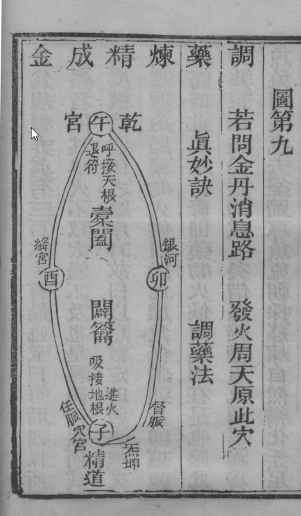
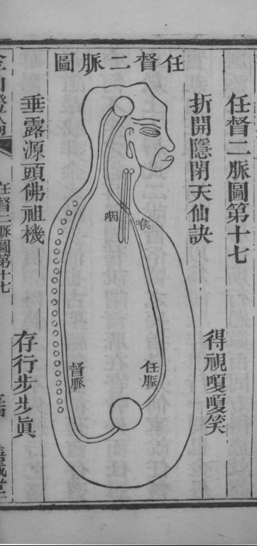

金仙證論
柳華陽真人著 江右株林橋傳盧柳華陽撰並註
序一
大道本來無言，以言詮者，易涉跡象；故冥悟甚希而謬言日出。不得真傳，豈不入於歧路哉？況古人之巧喻異名，每索解而不得，不特難窺大道之閫奧，且因喻而執名，反失其性命之真源。觀於此而懷存經度人之念者，安得不淺說而直論之乎？惟華陽禪師，幼而好學，夙稟靈根，積數十年，心無他用，苦志不懈，得合洪、沖虛二真人之奧旨，著為是書。剝盡皮毛，獨留骨髓，將古之異名掃除滌盡，直說小週天，重論下手工夫，發前聖之未發，啟後人之未啟。使苦志之好道者，且得升堂入室而後超登彼岸，復還無極。豈不快哉！是書雖出自一人之著述，真乃後世師教之規則也。讀之者，無不謂之仙佛之舟梯、修真之簡徑。美乎幸矣！聞之者，亦無不為之了然徹悟，豁然貫通，信乎至矣！余自幼慕道，力搜群書而莫能入悟，時至庚戌春，幸遇禪師，片言相投，示此書與余，余開卷讀之，心目通明，不覺手舞足蹈，渙然冰釋。其中條理次序，猶如親口相傳。而論小週天之工法，不雜一字，意則實貫串諸經之骨髓。然老師猶不自以為是，恐後人疑惑，不能徹解，又廣引先正之秘文，以為憑證。由是獨顯一真之實，直辟旁門之非，謂之仙佛之功臣，誰曰不然？且也前五條概然出自直說，後數條亦非出於荒誕。風火經，原集諸聖次第用功之正文，以為註腳。總說，直泄天機，使人下手調藥，採取工夫不失遲早之誤，則爐鼎、火候，一以發明。圖論下手之竅妙，而採取薰煉即在其中。顧命之說，示人性命不可須臾離也。賦歌論，即顯己所得之意，而大小週天即存乎其內。用盡婆心，平空洩漏，惟欲志士同成道果。是書不獨有益於當時，並大裨於後學。有緣遇之，猶如雲開見日，潭月雙輝，豈不欣然歎賞乎？余自愧管窺之才，喜悅同志，願普證公用，因而為序。
時乾隆庚戌春，洪都後學無霞道人高雙景序
序二
蓋道不得其真傳，由來久矣。自世尊開化愚智而同度，性命而異指，性闡迷開而漸修，命附靈利而證果，至於西天二十八祖，及東土六代慧燈，心口授受，莫不以性道慧命之兼修。由六祖之後，性法單揚，慧命掩秘，悟之者私附密語獨修，超越祖位，故為教外別傳。今之為學，不得慧命之嫡旨，闡揚性法，則性亦不得其真。是為識性之障霧，而差訛錯認，或以靈覺為真性，或以正念為真性，逐妄迷真，失卻如來之旨。盲修瞎煉，身根不能堅固而成金剛之體，長自下漏，故有轉劫迷失之誤。何況念坐乎？惟華陽禪師慈悲，另通消息。得師所授之真旨，會同元釋，吐露慧命之真傳，洩漏明星之真性。拔救迷妄，開通智慧，使見之者，立今劫而成佛，免墮他生再修。何等切近！何等簡易！愚迷不明雙修之理，分別教相智慧。參悟性命之原，融會其法，不分彼此。在釋有緣遇真道，得性命之真旨，修成性命，即道是佛也。在道有緣遇真僧，得性命之真旨，修成性命，即僧是仙也。釋道原本為一法，大則同，小則異。清淨自然覺王如來菩薩，即玉帝所自稱也。大仙、七仙、眾仙、金仙，亦是世尊所自稱也。一道坦坦，有何此何彼之分別乎？余慕覺真宗，涉步山川，叩求叢林知識者，實不少矣。究其所然，無非提公案、參話頭、打七坐禪之談。數十年來都成虛涉，並無慧命之師。忘食失寐，念念不休，感念蒼天，辛亥歲幸遇禪師。禪師見余志心苦切，便以開示心肝，決其疑妄，欲指而又未露。余慮為此道之尊重，諸佛之所禁秘，非師之不慈悲。誠心焚香立誓，懇求至切，方才決破根由。一言之下，頓悟全旨。原來成佛作祖之道，即在動靜順逆之間，豈有難哉？蓋禪師三十餘年，覓道之苦志，今捨慈悲，備著此書。古佛不露的，今始露；祖師不傳的，今始傳。將慧命壽命、佛性真性和盤托出，願人人成正覺，超越佛地；不使後世煩勞他人之父母，現今成就；其功豈小哉？
乾隆辛亥歲重陽月，靈台庵僧妙悟序。
序 煉丹第一
（盡言小周天）
華陽曰：欲修大道者，理無別訣，無非神炁而已。
神乃心中之元神，炁即腎中之元炁。煉精之時，則炁原在乎精中。精炁本是一物，所以曹祖師云：大道簡易，只神炁二者而已。凡學道之士，能識神炁之道，即是陰陽，性命之道也。故曰：無別決，神炁而已矣！
先須窮其造化，究其清濁。
造化者，乃吾身之生機，人由此機而生形，仙佛由此機而成道。學者能先窮此造化之機，則有下手處矣。清者是無天地人我之象，渾渾淪淪，恍如太虛。斯時一派先天機之未發，虛而待之，靜極自動，是為清也。濁者因有存想思慮見聞，知覺而後機動，即為濁也，豈可不究哉。
則精生，方可探攝。
精生者，元炁之動是謂精生。探者，探其炁之妙處，必須以我之正念，斂收微細之神，誠志專意，探入其炁之動所，招攝已生之精，歸於本穴，用火烹煉。
次察其呼吸，明其節序。
呼吸者，異風也。其用則有次序。轉變之法，非可一概論也。如精生之時，則當用攝精之呼吸。如藥生之時，則當用采藥之呼吸。藥既歸爐，則當用封固之呼吸。如起火之時，則用起火呼吸。沐浴之時，則用沐浴之呼吸。金丹始終全仗呼吸，故曰節序。
則神凝，方自戀吸。
神既凝入炁穴，則神自戀炁。神炁相合，則炁自然戀神矣。
然後可施可受而精可化。
施者，後天氣也。而為母氣。受者，先天炁也，而為子炁。子炁既受母炁，則精自化炁矣！倘不明母氣之真消息，則子炁散於外境，其精焉得化而為炁乎。
余見世人亦知陽生而煉精不住，金丹不成者，皆因不知其自然而然以混采混煉之過也。
凡世之學道者，知陽生固多矣。而所以化精成金丹者，何少也。由不知其風火之法，藥產有時，封固有爐，周天有度，混采混煉耳。
且觀古書之所作喻，名爐鼎道路，則人被爐鼎道路之所惑。
古書所喻爐鼎者，是煉精煉炁之所。方士藉此為言，曰女鼎，曰燒煉。初學未得真傳，信而惑矣。縱有真志，豈不誤哉！而道路者，即採取升降任督之脈絡也。俞玉吾云：任督二脈呼吸往來之黃道也。任脈者，起於中極之下，以上至毛際，迴圈腹裏，上關元至咽喉也。督脈者，起於下極之腦並繞脊裏上風府入腦頂。二脈通則百脈俱通矣，採取由此而運周天，由此而轉，能識此爐鼎道路，則金丹無不成矣。
喻名鉛汞藥物，則人又被鉛汞藥物之所誤。
古人修丹，以神炁比喻鉛汞，以真精比喻藥物，使人易悟。愚夫聞之，言鉛汞便以凡鉛凡汞燒煉為藥物，妄圖點化服食，求富貴長生，反到喪身破家，愚之甚也。
故假道愈顯，而真道愈晦。世因喻而惑人誑人者眾也。
群書喻名雖多，究其根源之所在，無出乎心腎之神氣而已。妄人見喻借喻為盲，而誑人曰，藥之先天氣不在自身，在女鼎。初學淺見不能分別真偽，信方士迷弄不識金丹，真訣不明，大道根源豈不更惑乎。
由此觀之，智者得師而明，患者被師而誤。皆因不悟群書簡易之妙而竟失於正理矣。
智人能識真假，除妄歸正，參悟大道。訪尋明師以求印證秘密之真訣。愚夫不然，喜旁門之小法，暗圖為人之師，縱有仙書真決，而曰吾不用看經，真訣在吾心內，惑眾亂真。後學以為至言，皆因心地不明，少讀群書，未有不失正理者也。
故予正欲詳而直論天仙道者，原乎先天之神炁。
神乃元神，炁即元炁。何以謂之先天，當虛極恍惚之時是也。既知恍惚是誰，恍惚此即先天之神也。恍惚之時，不覺忽然真機自動，陽物勃然而舉，此即先天之炁也。若此時即能下手修煉，何患不仙也。
煉精者，則炁在乎其中。
精由炁化，炁由精滿。煉精者，即是煉炁。故曰，炁在其中矣。
煉形者則神在於其內。
煉神即是煉精，古云：形化而後炁生，神凝而後水融。神炁合一，故神在其內矣。
煉時必明其火，用火必兼其風。
火者神也。精生之時，必以神而馭精則精歸源，既知歸矣又當久久以呼吸薰蒸，則精方能化為炁。
存乎其誠，人乎其竅，合乎自然。
凝神之時，外除耳目，內絕思慮，專志一心凝入炁穴。又要合自然之動靜，不可強制放縱。
若能如此依時而煉，則藥物自然生矣。
依時者是陽動之時。依時而煉，凡有動時遂即煉之，既煉己、則藥物自然生矣。
生，競遊其熟路者有之，若不起火歸爐，難免走失之患也。
熟路者，即陽關也。乃昔日精炁所游之路。古人有走泄者，皆由此也。起火者，是藥物歸爐之工法。藥生若不採歸爐，則藥物順熟路而泄矣。
然藥物既歸爐，又當速起火逼行其周天。
古云：火逼金行顛倒轉著，即此也。行是陰符陽火之法，若不行周天之火，則炁不聚丹不結矣。
尚不明火候之精微，雖有藥而藥亦不能成丹。
火候是一總名，其中有次第節序。而各有其候，如精生有調藥之候，藥產有採取之喉，歸爐有封固之候，起火有運行之候，沐浴有停息之候，火足有止火之候，此乃小周天之秘機。如若不盡精微，雖有藥不得火之法度，則焉能成丹世，可不歷歷以明之哉！
不知橐籥之消息。
橐籥者即往來之呼吸，古人喻之曰巽風。升降由此風而運，不得此風則輻軸不如法，凡小周天，始終全憑橐籥之風以為金丹之權柄。
不明升降之法度。
升降是運行周天之法，既行周天則有度數，往往學道之人不知升降度數，所以丹不結矣。
不識沐浴之候。
沐浴者乃卯酉生殺之位也。故停息為沐浴之候也。
不曉歸根之所。
歸根者乃還氣穴歸其本位之所。
如此空煉，何得成其道也。
兀坐頑空。不明大道要訣，雖修無益矣！
大凡臨機之時，必須暢明其神，勇猛其志。
此機時者，即採取薰煉之時也，切忌昏迷散亂。欲修丹者，當自精進勇猛。非他人所能助者也。
立定天心之主宰。
天心名曰中黃，居於天之正中，一名天罡，一名鬥杓，在天為天心，在人為真意中宮，若失真意，猶如臣失君主矣。
徘徊輻輳之運轉。
輻輳者，即徘徊往來之意。猶如車軸使爪之運轉一般。太上云：三十軸共一轂。
內鼓橐籥之消息，外依斗柄之迴圈。
橐籥即呼吸也，周天火候憑橐籥之息以定周天之度數。朝元子云：勸君窮取周天數，莫使蹉跎複卦催。斗柄迴圈即活潑運轉之機耳。
如此神炁相依而行，相依而住，則周天之造化，無不合宜矣。
凡行火之時，炁依神而行，神依炁而住。火候當行，則神炁亦當行。火候當住，則神炁亦當位。火候當止，則神炁亦當止。如此而煉，則金丹無不成矣。
時乾隆庚戌春，傳廬柳華陽，序於皖城之潔王古廟中。
正道淺說第二
（盡言小周天）
華陽曰：仙道煉元精為丹。
凡煉丹下手之仙機即煉腎中之元精，精滿則炁自發生。複煉此發生之炁，收回補其真炁，補到炁足，生機不動是謂丹也。則人之根竅無漏精之路便成人仙矣。
服食剛出神顯化，世聞無不善而願求者。
服食者是得前小周天如法修煉，以采大藥運過三關，故曰服食煉炁化神，出神顯化世間，無不喜矣。
奈何天機秘密，學者未必窮其根源，故多在中途而廢矣。
天機者即吾身中之生機。古人云，陽炁生，今人曰活子時。真仙上聖秘之深密不書於竹帛，學者無所覓處，空自磨煉，豈不在中途而廢。
所以予今淺說，使學者概而證之。夫精為萬物之美即養身立命之至寶。
萬物最美曰精，人有其精則生人，無其精則死。所以精者即性命之根源。陰符經云：精是炁之母，神是炁之子。古雲，留得陽精，神仙現成，豈不寶哉！
如精已敗者，以精補精保而還初，所謂得生之由。
中年，年邁之人，因精已耗散。故必用補精之法助之。鐘離真人云，晚年修持先論救護。
未敗者，即以此而超脫養胎化神，則亦易為易修易成之果也。
未敗者是童貞，本存陽精足炁，免得補精築基之功，從此下手采大藥不過七日，靜功十月之期即可以出神為神仙樂事，故此易為易修易成是也。
若以神順此精由自然之造化則人道全。
世人每遇精生，不知修煉，順此造化，男女交合，即為生人之道，由炁順化。
若以神逆此精修自然之造化則仙道成。
真人知此精生之造化，以神留精逆歸炁穴，用火鍛煉精化為炁，脫胎神，化仙佛，從此而得由精逆化也。
故精者乃是人死人生之關鎖。
精乃凡聖根由，故名關鎖。精耗必死，保而煉之即生，此理之至也。
其名雖然稱之曰精，其裏本自無形，因靜中動而言之曰元精矣。
此精當未動之先，裏本虛無，有何精可名。因人靜極，陽氣從靜而發動，故名之曰元精矣。
當其未動之前，渾然空寂，視之不見，聽之無聲，亦非精也，亦非物也。無可名而名，故名之曰先天易，曰無極時也。
此正鴻蒙未判之時，玄門名曰先天，釋氏名曰威音，易曰無極。總屬虛無，是無氣之謂也。
斯時，剛神寂機息，萬物歸根，此正謂之虛極靜篤。
此正上文鴻蒙是也。渾然一團，不見天地人我之相，如萬物逢冬歸根，陽炁潛藏，故曰機息。然則機雖息，而生炁之機即在息機之中矣。
靜中恍惚，偶有融會之妙意。
此言炁機將萌，未動之時也。
便可名而有其名，故名之曰道，易曰太極時也。
此正上文炁機將萌是也。
因此機一萌曰元炁也。炁既以萌而又旋動曰元精矣。
元炁元精分而言之，其機則是一也。
修仙作佛之造化，即從此而入手。若夫塵念兼起，必化淫精，順陽關而出。
凡修丹者，即在此時用工，則神炁自然相投合而為一。若煉已未熟，逢此炁機，淫念頓起，真炁必化後天有形之精，順陽關而泄矣。
修士正當此時正念為主，以神馭炁，起呼吸之氣留戀元精，可謂還原之道矣。
既以神馭炁，必加呼吸之氣收回元精，其精自然逆回於炁根矣。
真精既得還原，取其神氣混合，兩不相離，使其二物熔化，合而為一也。
元精不能自鎔，在元神鎔之，綿綿若存，使性情相洽。神氣合而為一者也。
如易所謂天地氤氳萬物發生。
天地之氣不交，萬物無所生。焉金丹之道不交，真種何所覓乎。崇正篇云：兩般靈物天然合，些子神機這裏來。
然後先天真一之炁仍舊從竅中發出。
竅即丹田炁穴也。所以混然子云，火從臍下發即此。
而為金丹之主宰。
主宰者依此炁為主也。
所以古雲未有不變媾而可能成造化者也。
此即尹真人之旨。造化者，即採取運周天之造化。先若無交媾之法，何得有藥產之機發現也。交媾即調藥之法。簷漪真人云：人身中只有一個元炁，只要迴光返照，將此炁收斂，沉到極處，久之，其中自有造化。
夫既知此炁之生機，即可行火補炁而煉丹。
生機者，即藥產之時也。古人云：藥產神知，即此也。行火，行周天陰符陽火之法，即升降往來，複還丹田之所。真炁得此動炁之所補，故謂之煉丹也。
故有辨時採取周天之候。
辨時者，即言藥之老嫩。古人常表藥老炁散，不能結丹。藥嫩炁力微，亦不結丹。然則何時不老不嫩，上陽子云：若人采先天炁之時，以暖炁為之信。又伍子云：如浴之方起，而暖炁融融，然此不辨，辨在其中矣。
周天法者，是言子午卯酉之法。子午為進退，卯酉為沐浴，然子午亦有沐浴。
古雲時至神知，正言此藥產之先天炁者是也。
藥產神有所知，即上文暖信之謂也。若不知採取，則當面錯過矣。
修士宜當此時須用凝神合炁之法。
以斂聚微細之元神入於炁中。
收付於本宮，則是為我所有之妙藥矣。
本宮即丹田也。
藥炁既承受以歸爐。
爐即丹田也。
須當徘徊於子午。
午屬於頂，子屬於腹。
運動身中之璿璣，又必須假呼吸之氣而吹噓之，方得乾坤於玄關，合而為一，迴圈之溝管矣。
璿璣者，即黃赤之消息，天道日月之迴圈。由黃赤而行丹道，神炁之迴圈，依任督而運。七悟祖師云：採取以升降，從督脈上升泥丸，從任脈下降丹田者。蓋真陽之炁，不能自迴圈於乾坤。須假呼吸之氣，吹動元關橐籥之消息，逼逐真陽，通任督，達乾坤，合玄關，而為天地。吾身造化之一大總竅矣。紫陽云：一孔玄關竅，乾坤共合成是也。
故神炁承呼吸之能，才得相依同行，而不外遊矣。
神行則炁行，神住則炁住，而為相依矣。且神炁又當承呼吸之能，方得隨脈絡而不外遊矣。然呼吸皆神炁之權柄也。
且氣之行住，又怕有太過不及之弊，故必依周天之限法，夫周天法者。
周天三百六十五度有零，故以法數而限定之也。
言十二時如一日一周也，故沖虛子云：子行三十六，積得陽爻一百八十數，午行二十四，合得陰爻一百二十數。
陽爻自子至巳為陽，陰爻自午至亥為陰。陽爻用九積數一百八十，陰爻用六積數一百二十，共成三百六十數。
外兼卯酉之法，中途行沐浴，完成周天。
卯在六陽之中，酉在六陰之中，凡行沐浴之法必在中途。而薰蒸周天原有三百六十有零。前行三百，未滿造化之積數，此行沐浴無數之火，合成全機。
所以古云：氣有行住起止多少之限法。
行住起止四法即達摩云：四候有妙用。又云：一時用六候，則采封之法兼於其內，行者行於黃赤，住於生殺，起於虛，止於危，是為一周天也。
白玉蟾云：起於虛危大，以虛危穴宿在坎宮子位也。
學者不可不察也，夫既得周天之妙用，積累動炁。
動炁即丹田之生機。
時來時煉，補完真炁。
凡丹田有動之炁，即要煉之，以完一周天。如若不煉一周天，則本根之炁不得滿足而亦不能成大藥。沖虛子云：又不可一周完而不歇，雖無大害，亦遲其動機，為無益也。
則精竅不漏，便可謂之長生矣。
李真人云：陽關一閉，個個長生。
如有精竅漏者，則未及證不死之果。
有精漏，則是有死之凡夫。無精漏，則是不死之真人。世亦有一等不漏精之軀未經火法，久之亦漏非真人，薰蒸不漏。又有老者，弱者，而陰縮者，自無精矣，是精已枯竭，休誤認為修證。
必加精修以元精盡返成真炁。
無精則陽不舉，內裏有真實，丹成矣。
則亦無其竅。
無精則陽關之竅自閉矣。
而外形亦無萌動之機。
竅閉則陽不舉，方是丹成。若有微萌之意，未證有成，必加火以薰煉。
則是名為大藥成矣，便可作大周天之工法也。
以上盡言小周天。
煉己直論第三
華陽曰：昔日呂祖雲七返還丹，在人先須煉巳待時。
己，即我心之念耳。若欲成還丹者，必須煉己為先。已若不純，焉得精還為炁，炁還神也。蓋七乃火之成數，先以火入水中，謂之返也。後以炁升火位，謂之還也。待者候也。若欲有心待之，則屬於拘滯而真陽反不生。若欲無心而待之，則落於頑空，錯過真機，此則有無兩失矣。然則若何為哉，且有還於無，而無內靈似於有，故離騷遠遊篇云：毋滑而魂兮，彼將自然。一炁孔神兮，於中夜存。虛以待之兮，無為之先。
蓋己者，即本來之虛靈，動者為意、靜者為性，妙用則為神也。
四者未發之前，渾然如太虛，有何名目。因機萌而言，故有意性之喻。
金丹，神雖有歸一，則有雙發之旨。
凡煉丹時，先則無為，寂然不動，渾然空空蕩蕩，不見有無之念，待其機之動時則發意採取，運周天時又立念，主鬥杓幹旅二炁，橐籥之消息，而神又隨真炁迴圈。
先若不煉已還虛。
還虛者，是純乎以靜，靜乎以化，杳無朕兆。還乎鴻蒙，複乎無極，萬象空空，此即本來之性體是也。
則臨時熟境難忘。
時即藥產之時，先若己不純，采藥煉藥之際，則有分花之念，神不能主張，炁則散也。
神馳炁散。
神不宰氣，安有不散也。
安能奪得造化之機。
奪者，取也。造化者，陽生也。
還我神室。
此神室，即下丹田也。凡神室，卻有三釜煉精之造化，即以下丹田為主，故神氣起，由此歸藏，亦由此是之，謂神室，即神氣所居之室也。
而為金丹生髮之末耶！
由前活子時用之得法，然後方有氣發生，而為煉丹之本。
故古人煉己者，寂淡直捷，純一不二。
不存有無之念，故可以謂純一。
以靜而渾。
正是鴻蒙無極之時。
以虛而靈。
十二時中不昧曰靈。
常飄飄乎。
不著一點形跡。
隨處隨緣而安止。
四相俱忘，安然獨立自在。
不究其所在。
是過去，心則無了。
不求其未至。
未來心不萌。
不喜其現在。
現在心不存。
醒醒寂寂。
照而寂。
寂寂醒醒。
寂而照。
形體者不拘不滯。
不被身之所勞。
虛靈者不有不無。
活活潑潑。
不生他疑。
明心見性。
了徹一心。
通天徹地杲日當空。
直入於無為之化境。
威音之前，無極之先。
此乃智者，上根之煉法也。
此以上皆言頓法，還虛之煉法者也。
若夫中下之流則未然。
未煉修己之人曰中下，非世曰中下，蓋修道本無中下。
當木煉之先。
已未煉之先也。
每被識神所權。
凡思慮有心，總是識神用事也。
不覺任造化之機而順化。
世人每遇身中炁機之生時，不知修煉而行世法則生人矣。亦有不交媾者，此炁而亦耗散。何故炁既發動，不得其法，留歸本處，焉有不順化者耶。
欲煉精者不得其精住。
煉精是坎離交媾以前之法，名曰調藥。若不知調法，精則不能住矣。
欲煉炁者，不得其炁來。
煉炁者是小周天之法，不得炁來是煉精不住，故此無炁之發生也。
古雲，不合虛無，不得仙，蓋謂此也。
能到虛無，方可煉丹。如不到虛無，丹則不成也。
故用漸法而煉矣。
由淺而深。
且謂煉者斷欲離愛，不起邪念。逢大魔而不亂者曰煉。
欲愛是妻子富貴師弟等事，斷而不留為練已。有力邪見者是眼偶見奇異，或見光，或見光中現神物，或平日所未見者，今始見之為外魔。於此信之，即為魔之所誘，曰天魔，曰邪魔，曰妖魔。眼不見或心見者為陰魔。見而喜悅為好，貪見則著魔矣。心不見或耳見者，耳聞魔言，或言福，或言禍，喜聞則著魔矣。見而自不見，聞而自不聞，知而自不知，依於正念，魔與我不相干也，不亂者，水火刀兵劫殺打罵，凡諸魔來，皆不可妄生懼亂之心也。
未遇苦行，勤求勵志，久而不退者曰煉。
未得訣者，當立真志而求師。天地之間，富貴以及妻子是有定分。若大道則不然，可以苦志而得。古雲，有志者，事竟成。古來多少不該成道者而竟成之，非生來有分也。
虛心利人，不執文字恭迎而哀懇者曰煉。
世之學道不得其真傳者，皆因己之假學問障於他人之真學問，故不得其道矣。若能虛心懇切執弟子禮，行弟子之事，豈有不得者乎。
眼雖見色而內不受納者曰煉，耳是聞聲而內不受音者曰煉，神雖感交而內不起思者曰煉。
此三者真煉法。
見物內醒而不迷者曰煉。
即六祖所謂見物心速起。
日用平常如而先練巳純熟。
己純後可煉丹。重陽云：湛然不動，昏昏默默，無絲毫念想，此由煉已純熟而得。康節云：思慮本起，鬼神莫知，不由乎我，更由乎誰。
則調藥而得其所調。
即前煉精之法。
辨真時即得其真時。
即藥產之時，用采藥之法。
運周天始終如法升降。
周天是往復之機，升降是進退之工，由己純，則無昏沉散亂矣。
己有不得其先煉者，則施法之際，被舊習所弄錯亂節序，故不得終其候也。
錯亂節序者，因己未熟，或知采封，不知運行，或知升，不知降，或知升降，不知沐浴，或知先天氣，不知後天氣，或氣行神不行，或知周天不知歸根沐浴。
世之好金丹者，雲有不練已而能成道者，謬矣！
西王母云：聲色不止神不清，思慮不止心不寧，心不寧兮神不靈，神不靈兮道不成。
煉己者在於勤，若不勤則道遙也。
已在時刻勤煉，如若放蕩，丹則有走失之患矣。
昔日呂祖被正陽翁十試正念而不疑。
呂祖任他魔來，不生疑心，獨立正念後，六十四歲隨正陽翁修道，卒能成道。
又邱祖受百難於重陽，苦志而不懈。
邱祖初至重陽會下，重陽謂邱飲稀粥，邱自知福為小，苦行七年，累遭魔難．當過二番死魔，二次飛石打折三根助骨又險死摸折，三番臂膊恁般魔難，苦志而不動心，自能決烈精修。
費長房靜坐偶視大石墜頂，不驚不動，此得煉己定心之顯案也。
昔世尊坐於菩提樹下，魔主波甸領百萬魔眾以兵戈恐佛而不動，以魔女淫事誘佛而不動坐。坐至堅剛牢固，自言我終不起離於此坐。
並書以告同志。
小周天藥物直論第四
華陽曰：仙道元精喻藥物，藥物喻金丹，金丹喻大道，何喻之多也。
神從炁化，炁從精生。欲望成其道者，先當保其精，精滿然後氣生，以此生氣是名藥物，藥物煉之不動便名金丹，服此金丹出神千百億化身。天地壞時，這個不壞，故喻名大道矣。
道藏經曰：精者妙物，真人長生根。
黃庭經云：留胎止精，可以長生。
聖聖真真，莫不由此元精以闡名藥物也。
正陽真人云：除了鉛汞兩味藥，都是哄弄愚夫。
夫藥物既根於元精，而又曰元炁者何也。
靜為元炁，動為元精。
且此炁從稟受隱藏於炁穴。
炁穴即丹田也。
及其年壯炁動。
人至十五、六，丹田炁自動。
卻有向外拱關變化之機者。
炁動自有暖融之信，至於陽關不知修煉，因此，之融信則神轉變而為情，而亦至於陽關，此炁則化淫精而出。
即取此變化之機，迴光返照，凝神入炁穴，則炁亦隨神還矣。
古云：迴光返照要知去處。
七悟禪師云：凝神收入於此竅之中，則氣隨神往，自然歸於此竅矣。
故謂之勒陽關，調外藥及至調到藥產神知。
藥產有二景，時至神知為內景，藥炁外馳外別有景。
斯謂之小藥，又謂之真種子。
行大周天初采藥時謂之大藥，此處行小周天初采藥時，謂之小藥或謂之其種子。古人未言小藥，而曹伍二真人始發小藥之名。後人即可以用藥不誤，藥產之真時，因得此名則易明矣。
因其有順逆之變化者，故曰元精元炁也。
順為無精，逆為元炁。
若不曰元精，則人不知調外藥。
元精從外攝歸爐內，謂之調外藥。
以混采混煉於周天。
無藥先行火，水火煮空檔。
不知既無其藥，且落於空亡，將以何者為小藥哉。
不知前此調藥之工，則無藥產之景到。
然古人但言調藥，而不言調法。
法即綿綿不斷之旨。
七悟云：一陽初動，凝神入炁穴，息息歸根。
不言調所。
所即炁之融動處。
又不言調時。
時即外物動之時也。
一調藥之虛名，在於耳目之外，未得師者，茫然無所下手，故我今直論之，曰，既知調藥吳，則元精不外耗。
以前盡言調藥化精之法，以下皆說小周天之事。
而藥炁自有未機焉。
古云：神明自來。
此古聖不肯輕言，直論予明而顯之，曰，未有知機而不採者，未有未調藥而先採者，如此或缺焉，是不得藥之真故也。
未得真傳，則不能得此藥。
且欲得藥之真者，惟賴神之靜虛，炁則生矣。
混然子云：時至炁化，機動籟鳴，火從臍下而發。
沖虛謂之，動而覺。
動者炁也，覺者神也。
以此不懼不驚。
或者乍見此景而不禁驚訝，則心動而神散。欲望成丹，不亦遠矣乎。
待而後起。
陽未融盛，不可急於採取。
沖虛謂之複覺。
此即在後風火經見得明白。
此時即藥炁之辨機，不令其順而逆之。
順是出爐，逆是歸爐。
斯謂之采藥。
守陽真人謂之歸爐。
鼎中既有藥炁。
此鼎即丹田也。
則有周天之火候。
周天三百六十五度有零，薰煉金丹亦似此理。
起刻漏之息火以烹煉之。
刻漏即是呼吸，煉金丹法全在呼吸之氣，以定爻數。
古人謂之升降也。
升謂之進，降謂之退。
然採得此藥來。
由周天之法如意。
斯固謂之金丹。
丹，是炁得火之煉法如意，謂之丹矣。
即可以行大周天之法。
是采大藥之秘機。
則小周天之造化從此畢矣，余願同志者休誤入於邪師，以淫精之邪藥認為真藥，則非藥也。
鼎器直論第五
華陽曰：仙道以神炁二者薰蒸，封固，喻之曰爐鼎。如煉外丹者，以鉛汞燒煉之爐鼎也。悟之，則在一身迷之墮入別途，故世因爐鼎之喻而惑者，眾矣。且有一等妄人，見爐鼎之喻，因誑人曰，以女人為鼎，以淫媾為藥，取男淫精，女淫水敗血為服食，補身接命，殊不知誑人自誑，返墮棄其萬劫不可得之人身。
此言采戰，女鼎閨丹之邪術。儘是用女人為爐鼎，信者必喪性命，墮於異類，萬劫而不可複者矣。
又有愚夫，泥其跡象，專喜燒鉛煉汞。世莫不由鼎器者，誤也。
福薄愚夫不知身中本有真鉛真汞，便以凡鉛凡汞燒煉為服食，誤信方土，反失其人身，皆由爐鼎誤也。
夫欲明爐鼎者，在夫神炁之機變。
神炁升為鼎，起止為爐。古云：鼎鼎原無鼎。
當其始也。
元精初生。
精生外馳，以神入精中，則呼吸之氣隨神之號令，攝回中宮混合神炁。
中宮即丹田，混合即綿綿息息歸根之意。
神則為火，而炁為爐。
以神炁言者，神在炁中，炁則為爐，神則為火也。
欲令此炁而藏伏者，惟神之禁止。炁則為藥，而神為爐。
以炁神言者，炁在神內，神禁止其炁。神在炁外，神則為爐，而炁則為藥也。
即古人所謂炁穴為爐是也。
以形言者指丹田為爐，神炁歸藏於此，此即調藥之爐也。
乃其采藥運周天者，當從炁穴坤爐而起火，升乾首以為鼎，降坤腹以為爐。
乾在上為鼎，坤在下為爐。
即古人所謂乾坤為鼎器者是也。
以形言者，首腹為爐鼎，即周天之爐鼎也。
見神炁之起伏。
起是升，伏是降。
而鼎器在，是也。
有神炁即有爐鼎，無神氣即無爐鼎。
然古人將神炁二者借喻鼎器，或以丹田為爐，而以氣穴為鼎者。
丹田，氣穴一也。
或以坤為爐而以乾為鼎也。
坤即腹，乾即首。
一鼎器之名目紛紛引喻，故後人無以認真。全若不推明直論，將何處煉精。
即調藥也。
煉藥。
即周天也。
為給金丹也，此古聖皆不輕露。
丹田為調藥之爐鼎，古來不肯明露。
今予闡明，正合呂祖所謂真爐鼎，真橐籥，知之真者而後用之，真用之真者，而後證果，得其真矣。沖虛子不雲乎，鼎鼎原無鼎，若不明火藥次第之妙，用執著身體摸索而為鼎器者，則妄也。非仙道金丹神炁自然之鼎器也。
風火經第六
（盡言小周天）
華陽集說風火經。
風者，乃煉丹之妙法，即升降之消息。古人喻為巽風，或喻為橐籥。是即往來之呼吸也，火者，煉丹之主，化精化炁之具。風火有同用之機，大丹有修煉之法。古聖不肯全露或有同言之隱，而人不能徹悟，視之如故。事然言之詳者，又違天誡。風火同用之機，乃上天之秘訣，金丹至要之法。凡人德薄，未遇真傳，豈知有同用之機哉。前聖高真，科禁秘之，不肯並論輕泄，愚亦不敢臆說，故集諸聖之隱語奧言，而為此說，每句之下，逐一解明，以招後學，見之者，詳究此解，印證本文，即知風火同用，次第不離之機也矣。
曰仙佛成道是本性元神，不得元精漏盡，不能了道還至虛無，而超劫運。
本性元神其名雖二，源流則一。佛謂之性，仙謂之神。元精漏盡乃修命之別名，即先天一炁是也。仙修謂之煉精化炁，又謂之煉形。佛修謂之漏盡成。又謂之慧命。不得此道，則不能超劫運。縱然修得灰灰相，無非五通之靈鬼耳，焉能契如來之妙道乎，故如來大佛方等大集經云：修習五通，既修習已垂得漏盡而不取證，何以故湣眾生。故舍漏盡通乃至行於凡夫地中。又楞嚴經世尊謂阿難云：第一漏盡難成，即此也。
元精漏盡不得風火，則不能變化而成道。
元精漏盡雖有生機，不得風火則不化為炁。
混然子云：人呼吸之氣為風，如爐鞲之抽動，風生於管護，火自炎。久久心息相依，丹田如常溫暖。今之禪僧不知風火，漏盡無成，常自下流。余有俗堂弟，字道寬，法名源明，久住金山，曰禪教。原不問此事，似過浸准，只悟自性，不必究他。餘曰，既有走漏，則與凡夫淫媾似也。首楞嚴經云：淫身，淫心，淫根不斷，如蒸砂石，欲成其飯，經百千萬劫，只名熟砂，必落魔道，輪轉三途，終不能出，禪教何得不問也。但如來風火之法，佛佛相印。若能自用，則三種淫事一煉自斷。世尊云：火化以後，收取捨利。又雲，微風吹動，則其中自有深旨，非親傳焉得知之。
故曰修煉全憑風火耳。
廣成子云：息者，風也。
白玉蟾云：火者，神也。
往古聖真，禁而不露。
上天所禁，秘之不傳於無德，實傳於有德，超乎劫運，出乎大寶，豈傳於無德者哉！
中古聖真，略言其始，而人不究其始，往往搜尋其中，徒勞精力。
始者，微陽初動，古聖隱而不露。乃金丹造化之根，人若能明乎其始，何事不成。故雖近代亦有得道高真，惜學者不知下手。重言其始，人猶不究其始，每每妄自採取耳。不知搜尋既實，雖藥有不採，而自采之景到矣，故學者不可徒勞無成焉。
不知中宮周天之說，或顯於周天練法，而隱於採取中宮。
中宮即煉丹之所，天心居焉。人若曉中宮之消息，則丹自成矣。蓋中者，非中外之中，即元關消息之中也。此中包羅乾坤運行，日月真種由此而升降，由此而運爐鼎，由此而立橐籥，由此而轉藥物，由此而化坎離，由此而合斗柄，由此而建是也。世人或知中宮，不知周天，則炁亦暫聚而暫散矣。安得成丹乎。
沖虛子云：藥已歸爐，末即行火，則真炁斷而不續，亦不成大藥。
或顯於採取中宮，而隱於周天煉法。
周天即升降也。時至藥產，陽炁從地升平天。天者，在人為首，位居上。陰符注云：上湧潮元，通靈陽宮，複降下，通於巽坤。坤者，在人為腹，位居下。混然子云：從子至已，流戊土。從督脈進陽火，自午至亥，以己土從任脈退陰符。世人或知周天，不知中宮，妄自行火，則與水火煮空檔，何以異乎。
沖虛子云：藥未歸爐，而先行火，藥竟外耗，而非為我有者！其斯之謂矣。
或顯於火而秘於風。
煉丹全憑風，以扇火風者，息也。回巽風，曰母氣，曰橐籥，皆我之呼吸也。
或顯於風而秘於火。
煉丹全憑火，以煉精。火者，神也。曰汞，曰日，日烏，曰龍，皆我之真意也。
或有言之簡而論之詳者，皆宜—一體玩，不可淺視也。使徒執其偏見，取宗於妄人之口，何其誣耶。
簡者深言神氣之機，詳者細言神氣同用之理。初學未得真傳，非由忽其簡而即略其詳，是終不得夫丹道之秘矣。況又宗於邪說，致生疑惑，其不至於暗昧者，少矣。
餘曰，覓法尋師問正傳若無真訣難成仙。
凡求師者。當察其真偽。若言不用風火，即是假道。雖欲成仙，何可得乎。
穀精火到風吹化。
精因火化，火因風灼。世人被此精損志夭命。因無制伏之法，智者藉此精養身助炁，是有風火之功耳。
髓竅融通氣鼓煎。
勞者，即腎府也。腎屬水，水無火焉能融通，所以人之精華多因腎而耗散。智者得風火之功，自能融通矣。鼓者，即所謂巽風也。
物舉潮來神伏定，情強性烈意和牽。
物即外陽，外因內動故此舉矣。始舉始伏則易伏矣。倘未覺其伏，則陽壯性烈必須迥光返照，綿綿若存，使炁與意和合。雖一時修煉之功，而性情不覺其渾合矣。
青陽洞裏須調煉，爐內鉛飛喜自然。
洞即炁穴，凡調藥時，務要綿綿，使精化為炁，則內之真鉛自然潮於上元矣。
抑聞之，玉芝書曰：元黃若也無交媾，爭得陽從坎下飛。
元者，天也。黃者，地也。即神炁也。神炁不交，安有藥之可采。
沖虛子曰：有機先一著，而後生藥以行火。
先一著者，乃微陽初動也。藥生而行火，所行火者，即行周天之火。
朱元育曰：晦朔之交即活子時。
活子時者，乃陽動之時也。
覓元子曰：外腎欲舉之時，即是身中活子時。
外腎舉者，非有念而舉。乃自無而生，生而或速或緩，皆由活動之機。然有念而舉者，乃是邪法。煉之即成幻丹。
渾然問曰：假若睡濃之時，不覺而自舉及偶然覺之，此時下手亦成幻丹否？
華陽云：睡濃時，自己身心俱已不覺，念從何有乎，嘗聞純陽祖師云：動則施功，靜則眠。又夏雲峰云：自然時節夢裏也教知。以此句言之，可以印證矣。
俞玉吾曰：內煉之道至簡至易，惟欲降心火入於丹田耳。
內煉之道乃上乘之法，簡易之事。但人被邪說所惑，不能信受。故真人破之曰，惟欲降心火入於丹田也。
又曰腎屬水，心屬火，火入水中則水火交媾。
古人謂心腎非坎離，殊不知心腎乃坎離之體，神氣乃坎離之用。且腎非脊腎之腎，乃內腎也。古云：內腎者，即臍下是也。雖在臍下，猶未得其所以然。要必得其神氣相投者，蓋其穴，正在臍後，腎前稍下，前七後三中間空懸一穴，此正是調藥煉精之所，而學者不可不察矣。
六祖壇經曰：有情來下種。
有情者，一非慾念之情，乃妙道中元機萌動之情。故龍牙禪師云：人情濃厚道情微。
道用人情，世豈知空有人情，無道用人情，能得幾多時。
元育曰：要覓先天真種子，須從混沌立根基。
古人言真種不一，或有言神是真種子，或有言炁是真種子，而不言真種子其父母所由生之理。故人被此顛倒之言所惑。
元學正宗云：始者，上下相交，混而為一。
蓋混沌者，乃天地合壁之象，即神炁會合之時。若覓先天真種子，先須明種之父母。蓋神炁比如天地，天地即種子之父母也。神入炁中，則是天入地中之象，即為混沌之時也。真種子原由神炁而生。神炁若不交，安得有真種子乎，則此中之根基當明矣。
正陽祖師曰：南辰移入北辰位。
南者，離宮，心乃離也。神即藏其中。北者，坎也，炁即藏其中。移入位者，即以神入炁穴。
杏林云：以神歸炁內，丹道自然成是也。
純陽祖師曰：我悟長生理，太陽伏太陰。
長生，乃我之無炁。悟之者，則生。迷之者，則死。欲學清靜正道者，先明道之根源。道無非我身內之陰陽。非是外來物件。許旌陽云：大丹若不以日月交光，乾坤合體，更假何物為之乎。
蓋太陽乃喻心之神，太陰乃喻腎之炁。伏者，以神伏炁之法。能伏住者，即得長生。否則不能得矣。
覓元子曰：始則汞投鉛窟。
程先生云：鉛得汞而相親。無中入有鉛汞，非他物，即我神炁。故呂祖云：不用鉛，不用汞，還丹須得爐中種。投者，以神投炁，即精炁不下泄，似水銀與鉛相制不動，然後爐中炁自生矣。呂祖云：安爐致鼎盡周圓，須得汞去投鉛。若不用汞投鉛，則鋁炁無所生矣。俞玉吾云：鉛得汞以生形。旌陽亦云：鉛因汞伏。
海蟾翁曰：先賢明露丹台旨，幾度靈鳥宿桂柯。
靈鳥，喻心中之神，桂柯，喻腎中之炁。
元學正宗雲；心乃神之宅，腎乃炁之府，豈無造化乎。古云：心以坎為體，以離為用。故心欲虛而澄。腎以離為體，以坎為用，故丹田欲實而溫，離火上騰故損離，火下駐故益。幾度者，凡陽生不拘時數，靈鳥宿亦不拘時數。時來時宿。紫虛云：夜半金鳥入廣寒。
旌陽祖師云：與君說破我家風，太陽移在明月中。
望江南云：日精若與月華合，自有真鉛出世來。
蓋太陽喻神，月明喻炁。移在者，神炁相會也。古云：要知大道希夷理，太陽移在明月中。
李真人曰：金丹大要不難知，妙在一陽下手。
世人學道，每被丹經之詞文所惑，不知真訣簡易之理。自己心內糊塗，反謂古人不明言。及見真師，強自爭辯。殊不知煉丹者，陽生之時，即起手之時，能於此時下手，又何疑惑乎。真陽云：先天之炁藏炁穴，雖有動時，猶是無形，依附有形而為用，始呈而即始覺。守陽云：凝神入此炁穴，而神返，身中炁自迥矣。
重陽祖師曰：純陰之下須是用火煆煉，方得陽炁發生，神明自來。
陰即是先天坤地變為後天之坎，而中年之人藥少，故不能採取，真人言須用火煆煉，然後有藥可采。沖虛云：有機先一著，而後生藥以行火。俞玉吾亦云：天入地中以此而產藥是也。
又聞之龍眉子曰：風輪激動產真鉛，都因靜極還生動。
此以下皆言風之妙用。上文一節，專言火之用法，而呼吸之氣未表其所用之理。故其人教人，只此用火而不知用風，其精則不化矣。棲雲先生云：火不得風不灼。抱一子云：知搖空得風則鼓，吾之橐籥，可以生風知噓。物得水則胎吾之炁，可以化精產鋁者，即藥炁所生之時也。還生動者，即藥產之時，即采藥之候也。
入藥鏡曰：起巽風，運坤火。
巽風者，呼吸之喻也。火者，乃元炁也。元炁不得呼吸則不能成藥，是陽不得附則必不聚之故也。必須存心中之陰神馭腎中剛陽之火，綿綿息息歸根，則坤火自運矣。然又恐用火者失於太過與不及，須當文黛武煉。故肖紫虛云：熾則坤火略埋藏，冷則巽風為吹噓，此言可玩矣。
黃庭經曰：呼吸元炁以求仙。
呼吸者，後天之炁也。元炁者，先天之炁也。先後原有兼用之法，若不兼用，元氣順流而出，不能成丹矣。必假呼吸之氣留歸以煉之。如沖虛子所謂以後天呼吸氣留戀神炁是也。
李清庵曰：得遇真傳，便知下手，成功不難，鼓動巽風，扇開爐焰。
此言果得真傳，便知用巽風。風者，後天氣也。沖虛云：元炁固要逆修，而呼吸之氣亦要逆轉。蓋人呼吸之氣出入，本在丹田。何曾有隔礙，但人只知出而不知入耳。學者凝神之時，氣穴之神能覺。進吸者，則氣自鼓，自扇，自吹，自噓，自逆轉矣。不用而自用之，何勞之有乎。混然子云：神呼氣，炁歸竅內。吹吾身中，無孔笛，常覺在此，息不用歸根而自歸根矣。莊子云：其息深深。又云：真人之息以踵即此也。
李道純曰：煉精其先，以氣攝精。
精生之時，原是下流。若欲歸源，必須用氣攝之，則無走泄之患矣。然又當知精生之所。沖虛云：用後天之呼吸尋真人呼吸之處，即此之謂也夫。
無名子曰：精調炁候。
調者，是精生時，以用調法，不然，則易走泄矣。古人云：精氣之為物也。運行則常退守，則災。四時不運，萬物何以生。日月不映，萬物何以明。流水不腐，戶樞不蠹。人不測道之根本，乃雲固精，為長生，此言為大謬也。若閉精可以常存，則布囊可以貯水。蓋炁候者是候炁之生時，即所為採取之謂也。
沖虛子曰：調定其機。
機者，是精生動機。若不調，則炁必泄。而藥物不生矣。
又曰：藥若不先調，則老嫩無分別。
老嫩是採取之時若不失調者，則何時而能採取乎。能知調者，自有老嫩之景到。
李虛庵曰：忙裏偷閉調外藥。
藥即吾身之元炁。炁雖藏炁穴，生則化元精，向外下流，若任外流，將何物而為藥乎。故調此氣返還於氣穴，久則天機自活動矣。
鐘離云：勒陽關。即此也。
沖虛子曰：調到真覺，則得真炁。
覺者，乃是時至神知，故其本靈之心體不能昧，謂之覺。若能如法調藥，則自有造化之機發見於外，可不勞而自知也。
楞嚴經曰：願立道場，先取雪山大力白牛。
道場者，修佛道之起手也。欲成佛道者，先當取雪山大力白牛。若無此牛，任汝修八萬劫，終不能出楞嚴之五陰。蓋雪山者，喻五陰俱空，既已空矣，則一陽生於五陰之下，元門謂之陽生，釋家謂之情來，又謂之真如，又謂之那偏事，皆是喻事之生也。太初古佛云：一陽發現，只是明心千百，譬喻只教人曉此一事耳。大力者，喻法象。釋家謂之明心，又謂之有物，皆喻牛之徵也。光明古佛云：日天開朗是為見性，千萬種譬喻無非教人明此牛耳。若謂實有此牛者，即非我如來達摩六祖之嫡傳，則是外道，非釋家之子也。豈不謬哉。
涅槃經曰：雪山有大力白牛，食肥膩草糞皆醒醐。
雪山喻炁之生處，白牛即是喻炁。醒醐喻炁之升降也。故六祖云：吾有一物，上舉天，下舉地，若獨修心中之識性，不兼修性海之真性，饒你八萬劫，終不能成六通、契如來之真性。心經解萬：誰知更有過於此者，寬則包藏法界，窄則不應纖毫，顯則八荒九夷，無所不至，隱則纖芥微塵，無所不察。又云：乃人之本源。
樓雲先生曰：人喫五穀化為陰精，不曾煆煉此物，在裏面作怪。只用丹田自然呼吸之氣，吹動其中真火，水在上，火在下，水得火自然化而為炁，其炁上騰，薰蒸傳透一身之關竅，流通百脈，燒得裏頭神嚎鬼哭，將陰精煉盡，陰魔消散矣。又覓元子曰：陰精者，五穀飲食之精，苟非巽風坤火猛烹極煉，此精必在身中思想淫慾，攪亂君心，務要凝神調息，使橐籥鼓風，而風吹火烹，煉陰精而為炁，其氣混入一身之炁，此炁再合先天之炁，然後先天之氣再從竅內發出而為藥。
此二真人之明言，不必贅解。
朱元育曰：晦朔中間，日月並會北方虛危之地，天入地中，月包日內，斯時，日月停輪，複返混沌，自相交媾，久之漸漸凝聚，震之一陽乃出而受符矣。
晦乃月盡無光，以比人身中陰靜之時。朔乃次月初一，比人身中陽動之時，日月並會者，即神炁同宮之法。北方虛危者，炁穴也。天入地中者，比神入炁之義。月包日內即是神攝炁也。一陽出者，乃藥產之時，即是採取之候。受符者，是起周天之火符，符又是運息數之別名耳。
此上數者，金仙證論之妙訣，風火化精之秘機，具在斯與。而其調藥之法，亦不外是矣。
此總結上文，風火同用之旨，調藥之法。古聖所言不肯明露，故人難悟大道。余淺說解明，以曉後學，庶不入於傍門而成正覺。世之好金丹者，果潛心此經，自修自證，即成大道，豈不樂哉。
予故曰：自始還虛而待元精生，以神火而化，以息風而吹，以靜而渾，以動而應，以虛而養，則調藥之法得矣。
以上言調藥之法，以下言真種所生之真時，即藥生也。
不聞邵康節之言乎，恍惚陰陽初變化，氤氳天地乍迥旋。
恍惚者，渾然一團，外不見其身，內不見其心，恍恍惚惚初變化者，即此恍惚之間，忽然不覺融融和和，如沐如浴，迴旋者，真炁旋動，正是元關透露而陰中陽生矣。
尹真人曰：俄傾癢生毫竅，肢體如綿，心覺恍惚。
此乃藥產之法象，不可驚怪。一起驚疑之念，則神馳炁散矣。務須思慮頓息，以虛待之，不可妄起刻漏之武火，亦不可迷失真候，靜聽氣之動靜，則元竅之陽自旺生矣。
紫陽真人曰：藥物生元竅。
藥物者，即真炁也。亦名真種子。元竅者，乃元妙之機關，即炁發之所，下通陽關，上通靈台，後通督脈，前通任脈。
六祖壇經曰：因地果還生。
地者，道曰丹田。釋名淨土，又名優陀那，又名苦海。巧喻異名，無非果生之處。果還生者，因以前能明有情來下種之機。到此，方有果生，果即菩提子也，又曰舍利子。
太初古佛曰：分明動靜應無相，不覺龍宮吼一聲。
無相者，道曰虛無，釋曰真空。此原無相，因靜定而生龍宮者，即上文因地是也。吼一聲者，即上文果生也。故世尊謂見明星而悟道，能知此一聲之機，則洞水可流西江，可吸海水可灌頂矣。
元學正宗曰：彈指巽豁開。
彈指者，頓然而覺，然不可起太明，覺須恍惚而待之。若起明覺之念，則後天之氣隨念而起，包裹先天之炁，先天既被後天所裹，則其所發之炁不得融盛，亦不能採取矣。
混然子曰：時至炁化，機動籟鳴，火從臍下發。
時至者，乃藥產之時也。籟鳴者，則元關之機動也。火者炁也。臍下者，丹田也。古人云：時至神知者，此也。學者苟不知此時之機，則當面錯過矣。
沖虛真人曰：覺而不覺，複覺真元。
覺者，知也。不覺者，渾也。陽炁才萌，似有可知，故曰，覺也。陽炁來旺，不宜急進火，故此言複覺真元，元者，即真炁也。
又曰：則用起火之候以采之。
此下言起火采藥歸爐也。起火者，後天呼吸之氣。先天之炁生時，仍行熟路。故用起火之法，采炁歸爐，然呼吸之火，本自存形而用之、必如無形，若著有形用之，則長邪火。果能有有而若無無中得有之妙，二炁用之如法，則藥自歸爐矣。
又曰：采藥歸爐。
藥者，真炁也。炁之生時則往外順出。故用神炁采之歸爐。真炁既得神氣之力，自然隨神而歸爐矣。
又曰：封固停息以伏神炁。
此二句言入中宜之沐浴，即是運周天子時之頭。故子時有沐浴之候，即此也。封固者，溫養之義。停息者，亦非閉息，是不行其鼓噓之法，將神炁俱伏於炁穴，隨後火逼金行，有行動之機者，則周天武火自此而運起。渾然問曰，我聞直論，言藥已歸爐，未即行火，則真炁斷而不續，亦不成大藥。此處既有沐浴，豈不斷否？餘曰，不行，非是閉塞呼吸之氣，全然不行，乃是不行橐籥鼓噓之機。蓋呼吸之氣，原有溫柔之息，在此吹噓，何得斷行火之機，雖暫伏微妙之理，而真機無有隨後不動之情，豈不聞之合宗乎。采封是子時前也，其即此矣。
玉鼎真人曰：入鼎若無刻漏，靈芽不生。
此下皆言子時起火煉藥。行小周天之火前，論起火采藥是子時之前也。此乃周天子時，當令之事故。達摩云：二候采牟尼。然則藥生，即為藥生之子時，而亦為活子時，行周天謂之行周天子時，不必認做一時。蓋鼎者，炁穴也。真炁既歸鼎內，必要刻漏之火以煉之。若無刻漏之火，則黃芽不生。
上陽子曰：外火雖動而行內符，閉息不應枉費神功。
外火即元炁也。內符乃呼吸之炁。元炁由呼吸而采歸爐，亦由呼吸而煉之，則爐中之藥方成變化。仙翁云：火銷金而神炁不敗。若藥已歸爐，呼吸之氣半途而迥，不應先天之炁，則藥已耗散，及再行周天之火與前不相續，亦不能成丹也。
守陽真人曰：起火煉藥。
起火是起周天之火，行十二位也。非真有位，借火為位，又謂十二時，非真有時，借火為時。
混然子曰：火逼金行，當起火之初受炁宜柔。
火者，呼吸之氣也。金者，元炁也。蓋金不能自升，必假火以逼之，使朝於乾宮。然爐中真炁初起火之時，藥物未旋，不可即行武火，須以柔溫之火通之。金有旋機，則火當長矣。若藥未甚動，炁伏而緩，先起武火，則內之炁亦不順隨大路，墮於蹊徑，欲歸正路，不亦難乎，故曰：宜柔也。
又曰：采時須以徘徊之意引火逼金。
徘徊，是往來活動之意。引火者，即神呼氣之法。逼者，催也。上文只言呼吸以用元炁。尚未顯明用元神。人知用二炁，不知神為二炁之主帥。蓋采藥煉藥，全賴炁穴之神權馭，二炁徘徊，則金自行矣。前文云：神呼炁，氣歸竅內，吹吾身中無孔笛是此也。
又曰：運動坤之火，沉潛於下。
坤者，爐也。火者，元炁也。運動坤火之時，往下而行，以通督脈而進。若別行異路是不能上乾鼎，則藥即耗散矣。渾然問曰：我聞玉蟾翁言，神即火，炁即藥，以火煉藥而成丹，今何又言炁是火，而前文又言，化穀精以呼吸為火，三事俱言火，不明孰是。
華陽云：此視學者得師不得師耳，真參實悟者，一見瞭然於心，若心下不實，焉得明乎。非是丹經惑耳，乃耳認錯丹經。誦幾句古言孰語，以為自己聰明，誤也。凡雲是起火，引火，火逼，行火，止火，皆為呼吸氣之火也。凡雲凝火，入火，降火，以火，移火，離火，心火皆屬神之火也。凡雲運火，取火，提火，坎火，坤火，水中火，爐中火皆先天炁之火也。凡呼吸之火能化飲食之穀精而助元精，凡神火能化元精而助元炁，凡元炁之火能化呼吸而助元神，元神之火又能化形而還虛助道成始成終，皆承火之力以登大羅之金燦。所謂火者，有逐節事條，豈可孰一哉。
混然子曰：鼓吾之橐籥，采藥之時，加武火之功，以性斡運於內，以命施化於外。
古人或以內呼吸為橐籥，或以外呼吸為橐籥，內外兼說則何是何非也。餘特指其是以示之橐籥者，消息也。若無消息，安有橐籥。古云：一闔一辟謂之變，知變通無穹矣。橐籥者，何似牛車水運行一般，同消息而不同路，若同路，則不名橐籥矣。又如風箱一般，同箱而不同風，若同風，則不能運轉矣。以風箱之內暗藏子箱，向爐之風是子箱之風，非風箱之風，實從無中生出。水車之水與子箱之風即喻先天之炁也。牛車與匠手抽動之風即喻後天之氣也。子箱者，元關也。消息者，即兩搭界之滾軸也。即喻先後二炁之機。子箱之風，若無抽動之風，則亦不能自吹噓矣。水車之車，若無牛車，則水車之水不能自運矣。至車與箱若無牛與匠，則水與風又無從而吹運之矣。蓋武火者是藥物曾已行動，故必橐籥之息火以應刻漏之度數，若徒用文火，則藥物亦不行也。而真炁竟耗散矣。內者，中宮也。煉藥行符，務要性主立於中官而為斡運輻輳之主宰，則水火方能隨外之道路而升降，又外必借命之元炁施化，則脈絡方能開舒暢快，內外融通，自然命聽於性，性持於命矣。：
邱祖師曰：采二炁升降之際，若不以意守中宮，藥物如何運得轉。
二炁者，先天後天二炁也。先天之炁不得後天之炁，則不能招攝轉運。後天之氣不得先天之炁，則亦無處施功。沖虛云：炁則不能無先後之二用。中宮者，炁穴也。藥物者，元炁也。升降之際，中宮若無主宰，則藥物不轉矣。然全在中宮之真意使真炁之運動矣。故禪師云：北斗望南看是也。
混然子曰：內伏天罡斡運，外用斗柄推遷。
沖虛云：斗柄外移而天心不離常處，若以內憂天罡而外不推斗柄，則真炁不升降。若外推斗柄而內不伏天罡，則真種不結。後禪機賦云：彈主斗柄，見明星而團旋。
許旌陽老祖曰：衝開鬥牛要迴圈。
鬥牛者，虛危穴也。鬥牛既開，用升降之法以運之。沖虛子曰：行所當行。又白玉蟾云：起於虛危穴，以虛危宿在坎官子位也。蓋虛危者，即任督二脈之起止處，亦名河車路。俞玉吾云：於此時，鼓之以橐籥，假之以猛火，則真鋁出坎，而河車不敢停留，運入昆侖峰頂是也。
金丹賦曰：子時河車聳，駕火銷金而神炁不敗。
子時是運周天之子時，駕動河車采藥上升。混然子云：鉛遇癸生之時，便當鼓動巽風扇開爐韝，運動坤火沉潛於下；抽出坎中之陽去補離中之陰，成乾位之象，複還坤位。
純陽祖師曰：憑君子後午前看，一脈天津在脊端。
子後是陰符，午前是陽火。一脈者，即行周天之道路。凡行火時，神炁必由此路而運。肖紫虛云：幾回笑指崑山上，夾脊分明有路通。俞玉吾云：元海陽和動，寒泉炁脈通。此子午當行之道。若神炁泛然於道外，不成路矣。或神不知其炁，或炁不能隨神，空空煆煉，則金丹不成矣。守陽云：有兩相知之，微意是也。
又曰：寒泉瀝瀝，氣綿綿上透昆侖，還紫府浮沉升降入中宮。
園通禪師云：群陰剝盡，一陽複生。欲見天地之心，須識承陰之法。寒者，坤也。泉者，坎水也。皆喻腎中之水。腎水果得以前所論之工法，到此自有瀝瀝波濤之象，乃真陽所產之時也。氣綿綿者，續而不斷之義。道光禪師云：一爻看過一爻生。昆侖即乾也。乾為首，紫府即丹田也。丹田為坤，升即上昆侖，降即下紫府，中宮即丹田也。祖師教人行火須上至乾鼎，下至坤爐。
廣成子曰：人之反復呼吸徹於蒂，一吸則天氣下降，一呼則地氣上升，我之真炁相接也。
吸降呼升者，即先天後天二炁之機也。然後天炁吸則先天炁升焉，升是升於乾而為採取也。後天氣呼則先天炁降焉，降是降於坤而為烹煉也。若以口鼻一呼一吸為升降者，則去先天之炁遠矣。
覓元子曰：乾坤闔辟，陰陽運行之機，一吸則自下而上子升，一呼則自上而下午降，此一息之升降也。
此皆言先天後天二炁消息之機也。乾者首也為天，故位居上。坤者腹也為地，故位居下。闔辟者，乃內外呼吸之元機。蓋外面之氣降裏面之炁則過我而升，外面之升裏面之炁則過我而降，此乃周天之秘機，凡夫豈能知之。故仙翁云：若教愚輩皆成道，天下神仙似水流。渾然問曰：老師所言有兩重之呼吸，但升者，其意要主宰中宮，以為斗柄轉心之主。又見此處其神要隨先天之氣升降。又聞後天之氣在息上升降。如老師言，三處都有動靜知覺之意，不知其神其意重在何處，又不知其神其意如何分別用度。我聞之丹經曰：引則神炁同行，住則神炁同住，今此分別神意其不相合，何也？華陽云：子之不明者，非經之不明，是子之執著偏見。雲何為機也，譬如，世人安消息以制物件之法，如若投機，一叩即應，無處而不動乎。但有先天之炁者，則我之經絡自能通應。而又有後天之氣鼓午，安有上下中間不應之理乎。可見先天，後天，上下，中間皆主乎其機也。若是無其機，焉得應之。故太初古佛云：一片東兮一片西，兩頭動處幾人知，出有入無真造化，神氣相交透祖機。雲譬喻鄉人織布，其意一發，手足頭目俱已發動。發者，是誰動者，其神意在何處。若能明此理，則臨時而不誤造化之機緘矣。故前玉吾解陰符經云：恆山之蛇，擊其首則尾應，擊其尾則首應，擊其中，則首尾俱應。又云：其法潛神於內，馭呼吸之往來，上至泥丸，下至命門，使五行顛倒，運於其中，此即周天內外機動而已是也。又沖虛云：以意在中宮、以神馭炁，其炁自尾間，夾脊上昆侖，腹下丹田，周流運轉不絕，又何必有疑哉。因問曰：聞江西道人王山而亦能升降，因何以幾十載不結丹成大藥。答云：此人乃後天之意氣，非先天之神炁也。
沖虛子曰，當吸機之闔，我則轉而至乾，以升為進，當呼機之辟，我則轉而至坤，以降為退。
吸機之闔固是下，然而內裏之機要上，上者，自下而升至於乾，為進陽火，為採取。呼機之辟固是上，然而內裏之機要下，下者，自下而降至於坤，為退陰符，為烹煉。此即內外闔辟之機也。
肖紫虛曰：乾坤橐籥鼓有數。
此以下皆言周天之息數。上文說升降法，而其中卦爻之數尚未表明。若不用其數，則丹道又不成矣。朝元子云：勸君穹取周天數，莫使蹉跎複卦催。蓋乾坤者，乃天地之定位。橐籥者，即鼓風之消息。奈何真炁不能自返複於乾坤，微賴橐籥之法以吹運之。蓋乾坤即橐籥之體，坎離乃橐籥之用，所以乾呼返吸至於坤，坤吸返呼至於乾。乾坤者，乃坎離之體內。呼吸者，即坎離之用。人若能明乎，內呼吸則橐籥自鼓而乾坤自運矣。數者，乃陰陽升降之度數，假呼吸之息數而定卦天之揲數。
薛道光禪師曰：火候抽添思絕塵，一爻看過一爻生。
抽添即真炁上升下降之旨也。絕塵者，凡臨機時，幻化頓息，則真我不離於炁。爻過爻生者，喻綿綿不斷之意。守陽云：隨機默運入元元，呼吸分明了卻仙。
陳泥九曰：天上分明十二辰，人間分作煉丹程，若言刻漏無憑信，不會元機藥不成。
天上有十二支之辰位，煉丹亦有十二時之火候，故六陽用進，六陰用退。程者，每時有一定之度數。若言不用息數之刻漏，則是傍門外道矣。而非金丹也。縱能強制升降，亦不能結大藥。既不用周天之度數，又將以何物而為周天乎。以明明之刻漏而不悟，則是愚之甚也。
鐘離祖師曰：生成有數。
有數即乾用九而坤用六也。
金穀野人曰：周天息數微微數。
周天即往來返複之義。微微數者，不著於相，順隨而引火候之機，是周天程限之數無差也。
陳泥九曰：乙陽複卦子時生，午後一陰生於媾，三十六又二十四。
沖虛子曰：子至巳六時為陽，陽合乾，故用乾爻，乾策。乾爻用九，而四揲之為三十六，故陽火亦用九，同於四揲。又注云：子醜寅以次皆用四揲之三十六。又云：午至亥六時為陰，陰合坤，故用坤爻，坤策。坤爻用六，而四揲之為二十四，故陰火亦用六同於四揲。又注云：午未申以次皆用四揲之二十四。又云：陽時乾策二百一十六，除卯陽沐浴不用乾，用實一百八十也。陰時坤策一百四十四，除酉陰沐浴不用坤，用實一百二十也。合之得三百息周天之數也。閏余之數在外，蓋三百數者。實非三百息，皆譬喻辭也。
守陽真人曰：子行三十六，積得陽爻一百八十數。午行二十四，合得陰爻一百二十數。
陽爻六時用九，除卯時不用，只得一百八十。陰爻六時用六，除酉時不用，只得一百二十。沖虛子曰：卯在六陽之中，酉在六陰之內。調息每至於六時之中可以沐浴，即此也。
悟真註疏曰：子進陽火，息火謂之沐浴。午退陰符，停符謂之沐浴。
息火停符者，停住有作，而行自然之妙運，非是停住先天而不行，是停住後天之武火。故履道云：十二時中母令間斷。俞玉吾云：天道無一息不運，丹道無一息間斷。故卯酉時，不行之中而默運吹噓。則子午亦然。又重陽云：子午沖和連卯酉，春冬秋夏相攜。沖虛子云：世稱沐浴不行火，且道吹噓寄向誰，要將四正融抽補，想得金丹一粒歸。又陸子野注悟真篇云：卯酉不進火，但以真炁蒸蒸也，而為沐浴，萬古不移。
曹還陽真人曰：十二時中，時時皆有陽火陰符，凡進則曰進陽火，凡遇則曰退陰符。亦以陽用者，曰火。以陰用者，曰符。
十二時者，即吾身中運周天之時也。子巳六陽時進陽火，午亥六陰時退陰符。進則為升也，退則為降也。故進則曰進陽火，退則曰退陰符。時時皆有陽火陰符者，不在沐浴時而亦有沐浴，故陽用者曰火，陰用者，曰符。渾然問曰：但聞六陽時中沐浴，六陰時中沐浴，此理可明，但不知六陽時中時時有陰符，六陰時中時時有陽火，此理深微，願求教訓。華陽曰：凡行周天之時，其後天之氣有迥轉之機，故在此迥轉處，內藏陰符陽火之秘機，既有六陽六陰之限數，焉得一息而運至於天哉，縱運，亦不成周天之度，不合刻漏之法則矣。渾然又問曰：弟子尚愚迷，不識陽火陰符之精微，敢再求指教。華陽云：凡運火之時，後天氣進，則謂之陽火，後天氣退，則謂之陰符。凡陽火陰符沐浴歸根者，皆是借後天呼吸之氣以為周天度數之法，則若無其呼吸，則不成陰符陽火沐浴歸根矣。邱祖師云：運行周迥，自有經路，不得中氣斡旋，則不轉。又沖虛云：火候誰雲不可傳，隨機默運入元元，達觀往昔千千聖，呼吸分明了卻仙。又問曰：昔日達摩言：二候采牟尼，何為二候。云：藥生而往外，以用息采歸滬為一候，藥既歸爐，封固又名一候。又問曰：何為四候。云：升降沐浴即為四候。又問曰：何為之閏餘。云：即歸根還於下丹田之處，故亦有溫養沐浴之位也。
沖虛子曰：凡一動則一煉而周，使機之動而複動者，則煉而複煉，周而複周。
此即言凡有炁之動者，必須煉之，則小周天之火容易止。如若不煉，則火不能速止，而大藥亦不能發生矣。古云：運罷河車君再睡，來朝依舊接天根。古皖山合封問曰：余自學道今已八旬，陽還自動，是何故也。答曰：陽既舉是未得火煉之過耳。封曰：余得七悟師所傳，運於周身四肢，運六回陽，六回陰，左運三百六十，有運二百四十，豈不是火工。華陽曰：既是火工，八十因何陽還舉，此非金丹，乃小法。是七悟師當初止汝之念耳。如此空運有何益也。合封曰：金丹之道若何為哉。華陽曰：金丹之道從陽生時，凝神入炁穴，鼓起橐籥之巽風，息息向爐中吹噓，猶如鐵匠手中抽動一般，風生則火焰，火焰則精化，精化則炁自生矣。采此生炁，升降往返謂之周天也。
又曰：積之不過百日，則精不漏而返炁矣。
百日是煉精之名目，但凡有二候之機來者，則百日可期。少而勤者，成之速。若中年，年邁而又不勤者，未可定其日期。凡有精漏者，則未成混盡通之道。如精不漏者，則精盡還成炁，不死長生之果得矣。太邑海會寺方文僧龍江問曰：以此自保守，可得楞嚴經漏盡通成否。華陽云：保守只名斷淫心，淫身而已，知用火化則淫根方斷，漏盡通自成，則不漏矣。然淫根者，即外腎也。若有舉動，即有生死矣。
正陽祖師曰：果然百日防危險。
防危險者，防時至藥生而神不及知覺，則錯過矣，或不明起火之法，或昏睡而神不靈，此乃失於炁矣，或當進火而不進火，當退符而不退符，當沐浴而不沐浴，當止火而不止火，當歸根而不歸根，則失於造化之機，故曰防危險。
肖紫虛曰：防火候之差失，，忌夢寐之昏迷。
差失者，皆因學人心不誠而意不專，若靈台潔淨，火候明白，有何失乎。古人往往走丹者，皆因理未明而心不專，故有差失之患。夢寐昏迷者，凡學道之士，宜乎先養神，神純自然靈覺。神若不純，睡則生塵妄之心，故有夢寐走失之患矣。
石杏林曰：定裏見丹成。
丹之所成者，是炁已曾圓滿，外腎不舉，丹光上湧，故有所見也。
正陽祖師曰：丹熟不須行火候，更行火候必傷丹。
丹熟是有止火之候到，故謂之熟。既知熟矣，當用采大藥之法，則小周天之工法無所用矣。若再用小周天，丹不傷乎。
肖紫虛曰：切忌不須行火候，不知止足必傾危。
凡煉丹，若不知止足，必傾危之患也。昔日白玉蟾六十四歲下工，已到止火之候未及采藥則已傾危矣。又邱真人到止火之候未防其險，則夜自走失。又曹還陽真人會親，偶見此止火之景，未及採取，亦以走失元陽矣。故崔公云：受炁吉，防成凶，火候足，莫傷丹。所以紫陽云：未煉還丹須速煉，煉了還須知止足，若也持盈未已心，不免一朝遭殆辱。
此皆言小周天造化，火到丹熟止火之候也。
止者，不行升降也。然雖不行升降，時刻不可須臾離火，常常溫火薰蒸，離則亦自走矣。
沖虛真人曰：有止火之景。
此乃止火之時采大藥之候也。須求真師口授方能出爐，若無真傳，不知採取之法，不知採取之時，故景不得矣。得真傳，知采法，景到又不可不知也。若傍門認取眼光靜坐，慧光千百種光，則錯之甚矣。若前此不知坎離交媾之法，丹田則無藥，而外腎亦不能如馬陰藏之形。縱有外光發現，此非丹田之苗也。蓋屬想妄而發矣。若真能成馬陰藏形者，自有異常之景，故純陽祖師云：曲江上，月華瀅淨。又翠虛篇云：西南路上月華明，大藥還從此處生。俞玉吞云：西南屬坤，坤為腹，藥生於丹田之時，陽炁上達，麗於目而有光，故自目至臍一路皆虛白，晃耀如月華之明也。
守陽真人曰：且待其景到之多而止，大藥必得矣。又曰：初煉精時得景而不知，猛吃一驚而已，乃再靜而景再至，猛醒曰：師言當止火也。可惜當面錯過。又靜又至，則知止火用采而即得矣。是採在於三至也。今而後當如之。及後再煉不誤景，初而止失之速。若待景至四而止失之遲。不速不遲之中而止，火得藥沖關而點化陽神。凡有真修仙，真千辛萬苦，萬萬般可憐煉成金丹，豈可輕忽，致今傾危哉。
自古聖真不泄止火之真候，亦不泄采大藥之真景，真候真景獨賴沖虛，守虛二真人泄萬古不泄之天機，今則盡泄矣。但後學無有不沾二真人之恩，此乃明言直論，不必重加注足。後學因緣，若至財侶雙備，速早下工求取大藥，煉炁化神。參明三至則大藥可得。神可化而仙成矣。如或不透，再覓沖虛真人之秘文，參合宗之九章，則大周天之造化，其情無不明白矣。此以上盡屬調藥煉精化炁成金丹之造化，而逐節工法之口訣盡備於此矣。但經中所言，後天呼吸之氣者，必須師傳，方敢自用。非是著於口鼻，亦非閉氣於丹田。著此二者，俱屬於傍門非金丹也。凡借後天之息以為吹噓逼運者，是炁穴之內。有生機之動者，因此而調息，既調炁穴內之真息，而後天之息則自然而至，於炁穴相兼相連以同動矣。然古人或以單言後天之息，則先天之息無。有不得其機而妄用後天或單言先天之息，則後天之息無。有不借其機而能用先天，故先後原有兼連之消息。凡調息之時，其神專重於先天之炁，內以熔化，行住起止不過借後天之息以為熔化。行住起止之權先天之炁。既有生機，若不得後天則先天亦不能自熔化行住起止矣。凡四方有學道之同志者，果知造化之機，不問先天與後天，若臨時能用消息二字者，則先天後天有不待辨而能自明矣。
此以上皆言煉精化炁成金丹之元功，風火同用之妙旨，盡在斯歟。餘不敢謂此集為自論之妙道，然皆會萃先聖之真傳，即後來萬劫高真用風用火之根本，使見之者，即了悟契，合仙佛之真旨，成己成人仙佛之果證矣。
效驗說第七
（盡言小藥產景）
華陽曰：以前六章藥物，爐鼎，火候無不表明矣。但藥產之景尚有未全，此篇重以發明，願有志之士早成大道。是餘夙所懷之志也。且藥產之效驗，非暫時可得。至真之道，在乎逐日凝神返照炁穴之工純熟，而後有來之機緘夫，或一月元關顯露，或數月丹田無音。遲早各殊而貴乎。微陽勤生不失調藥之工夫，則藥產自有驗矣。且炁滿藥靈，一靜則天機發動，自然而然周身融和，酥綿快樂，從十指漸漸至於身體，吾身自然聳直，如岩石之峙高山，吾心自然虛靜，如秋月之澄碧水，癢生毫竅，身心快樂，陽物勃然而舉，丹田暖融融，忽然一吼神炁如磁石之相翕，意息如蟄蟲之相含，其中景象難以形容，歌曰：奇哉！怪哉！元關頓變了，似婦人受胎呼吸，偶然斷，身心樂容腮，神炁真渾合，萬竅千脈開，蓋此時不覺入於幻冥，渾渾淪淪天地人我，莫知所以而又非無為，幻冥之中，神自不肯舍其炁，炁自不肯離其神，自然而然組結一團，其中造化似施似翕，而實未見其施翕，似走似泄，而實未至於走泄，融融洽洽，其妙不可勝比，所謂一陽初動有無窮之消息。少焉恍恍惚惚，心已複靈，呼吸複起，元竅之炁自下往後而行腎管之根，毛際之間癢生快樂，實不能禁止，所謂氣滿任督自開。又云：運行自有徑路，此之謂也。迅時速采，烹煉烹煉複靜動而複煉，迴圈不已。少年不消月余，中年不過百日，結成金丹，豈不樂哉！
此一篇故不當安於此效驗，原是調藥後之事，理當安於調藥之下。因句法多之，故耳讀者當默會於調藥之下。假若有些效驗，不可認為怪事，即是藥產之真景，當自保護真種矣。
總說第八
夫金丹之道，從靜而入，至動而取。若不靜則神不靈，而炁亦不真於此。妄煉，即屬後天與先天虛無，金丹之道不相契也。蓋靜者，大道之體，造化之根。唯靜則可以煉，不靜則識性夾雜，終與道相違矣。故幻丹走泄，而道不成就者，皆由未靜而夾於識之過也。夫靜者，靜其性也。性能虛靜，塵念不生，則真機自動。動者，非心動，是炁之動也。炁機既發動，則當以靜應之。一動一靜，不失機緘，是謂調藥，是調交合，行乎造化，性命雙熔，是謂真旨妙用矣。苟或專以靜而不識動，或專以動而不復靜，皆非正理也。次當明其藥產老嫩，老則炁散不升，嫩則炁微不升，務在靜候動旺始采，是謂當今，故曰，時至神知，以順行之時候，即逆行之時候矣。故又曰，藥炁馳外則外，則有景。前所謂調藥，用之日久者，是為虛耗之軀言之耳，若壯旺之體，只於運周天之當時調之，不用日久。若調之日久，不運周天，則陽極而精滿，滿則又溢矣。不知法則活而訣則一，故童貞只用大周天，不必用小周天，壯旺之體，雖不可不用小周天亦不必調之。日久只候藥產景到時，調其老嫩，凡元炁一動，伺陽之長旺，即當采封，運行周天，壯旺之體，雖不可不用小周天運而複靜，動而複運，迴圈不已，是謂之進退行火，是謂之採取周天也。勤行不惰，道有何難哉，故曰：丹田直至泥丸頂，自在河車已百遭。又云：以虛危穴起，以虛危穴止，蓋虛危穴即任督二脈之交處，立斗柄，運河車，皆由此而起止。故沖虛曰：起於是，止亦於是，且運，必假呼吸而吹之，若不以呼吸吹噓，則神炁不能如法。似有似無，合乎自然，相依之運行。蓋行以神為之主宰，不見有炁之形跡。元炁乃無形之行，隨元神之運行，聽呼吸之催逼，故曰：夾脊尾間空寄信。而呼吸乃采運元炁之法則，逆吹微緩謂之文火，緊重謂之武火。數息運元炁者為爻，為時，為度，為位。而周天之造化，以此為規模，非真有三百六十有餘也。故曰，每時四揲所以然者，使其水火不致太過不及也。是範圍元炁而成其度數，為造化之總序耳，故曰，以息數定時數也。或又問爐鼎，道路，藥物，火候，曰：能此虛危，任督運用，即爐鼎，道路明。此陽動升降，即藥物，火候，而道即在是也。除此皆非正理。盡屬簽蹄惑人矣。借簽蹄獲魚兔，謂筌蹄為魚兔，則誤也。去簽蹄專魚兔，朝采暮煉，自然精化炁足，丹成景至，再行向上工夫煉炁化神，超凡入聖，出走千百億化身，皆可由此書而上達矣。
圖第九


圖說第十
金丹之道前八篇已盡之矣。尚恐學者不知竅妙，故備此圖以補全書之要訣。願有志者，一覽無疑，不為舊圖所惑。庶知陽生在此，調藥在此，鼓巽風在此，藥產在此，採取在此，歸爐在此，駕河車在此，還本復位在此，金丹造化之無功莫不在此矣。然竅本無形，自無而生，有則謂之元關，中宮，天心，其稱名固不一也。夫虛無之窟，內含天然真宰，則謂之君火，真火，真性元神亦是無形。靜則集氤氳而棲真養息，宰生生化化之原。動則引精華而向外發散，每活子時二候之許其竅旋發旋無，故曰：元關難言，其炁之行，後通乎督脈，前通乎任脈，中通乎沖脈，橫通乎帶脈，上通乎心，下通乎陽關，上後通乎腎，上前通乎臍。散則透於周身，為百脈之總根，故謂之先天其穴，無形無影，炁發則成竅，機息則渺茫。以待成全八脈，則八脈湊成共拱一穴，為造化之樞紐，名曰：炁穴。譬如：北辰居所，眾星旋繞護衛，即古人所謂竅中竅也。竅，即丹田。上乃金鼎鼎稍上即黃庭。竅下即關元，古謂上黃庭，下關元是也。關元下即陽關，亦名命門，乃男女泄精之處。腎管之根由此而生，但黃庭，金鼎，炁穴，關元四穴俱是無形，若執形求之，則謬矣。又謂夾脊兩腎中藏元炁，則亦謬矣。此書圖之所作，實發古人所不盡泄之旨，而又有以辟其誕妄也。
顧命說第十一
（此煉己之首務）
夫顧命者，乃是收視返聽，凝神聚炁之法，豈有他術哉。古聖有言曰：命由性修，性由命立。命者，炁也。性者，神也。炁則本不離神，神則有時離炁。俞玉吾云：心虛則神凝，神凝則炁聚。欲其炁之常聚而不散者，總在爐火勿失，溫養其元，使神炁如子母之相戀。左慈雲；子午顧關無，元則命之蒂也。若不顧守，則火冷炁散，久而命亡矣。黃帝云：存心於內，其炁自然沖和不死，故性命二者不可須庾相離也，離則屬於孤偏矣。崔公云：十二時，意所到，皆可為。混然曰：無晝無夜，念茲在茲，常惺惺地動念以行火，息念以溫養火。玉蟾云：神即火，炁即藥，以神馭炁而成道。即以火煉藥而成丹。有藥無火則水冷，而炁不生。火養鍋底則水暖，而炁自騰。古云：火燒苦海泄天機，紅爐白雪滿空飛。雪，即炁也。故炁因火而升，火因風而灼。十二時中迥光返照，刻刻以無煙之火薰蒸，使性命同官，神炁同爐，綿綿息息，似有似無，內外混合，打成一片。黃帝曰：火者，神也。息者，風也。以風吹火久煉，形神俱妙，人能如此，何優命之不固也。夫命之元炁，乃月魄。神之靈光，乃日魂。以魂伏魄，則先天之炁自然發生。人多不測造化，盲修瞎煉性命各宿。孤陰寡陽自謂長生得道，而不知其違道甚遠也。夫修煉者，方入室之時，當外除耳目，內絕思慮，真念內守，使一點元神渾渾淪淪，隨其形體榮枯，聽其虛靈自然。融，然乎流通，湛，然乎空寂。於此常覺常悟，冥心內照，防其昏沉，昧乎正念。參同契云：真人潛深淵，浮游守規中。規中指玄關一竅也。然又不可執著，以致真陽不生，其妙總在不急不怠，勿助勿忘而且。清靜經云：空無所空，寂無所寂，真常應物，果如此，則神炁渾然如一，恍恍惚惚若太虛。然古云：先天一炁從太虛而來者，即此也。夫機之末發，靜以俟之，之既動，以神聚之，而顧命之旨盡在斯矣。
風火煉精賦第十二
（總言大小周天）
煉者，造化之工。精者，變化之源。火因風而焰灼，精得火以熔熔。勒陽關謂之調藥，攝炁歸即是還無。察其機煆穀精而調燮，辨其候運白脈以歸源，會其源則神炁相依，鼓其風則真精朝元。夫精者，乃天地之源，造化之本，逢時節而旋機動，得火以磁戀達關竅，而流變泄吹風，則還壺。是故坎宮森布，無神攝而徘徊離中，橐籥真炁旋而運轉爐內，火逼白虎朝於靈台，鼎中水融，青龍游於深淵。陽關禁閉，元竅門開，果然風火既同爐。久而水暖自生霞，月華吐則汞引鉛，而鉛引汞日精射則蛇交龜，而龜交蛇造化之變遷兮，待靜觀動。藥物之老嫩兮，伺機聽命。杳冥中起恍憾，中迎自元炁而生炁，本無名而喻名，知其時者能奪天地之真炁，順其機者即有升降之法程，薰之煉之則超凡而入聖品，食之檀（「木」應為「飯左」）之化枯骨以登太清。嗟呼！今之學者，奔山駕海，坦坦之大路偏過，勞形兀坐，赫赫之明珠拋播，利馳而名謾，德薄而垢重識性，以妄談去正而歸左，彼夫道本至近情隔逢，偏理自不遠。性失，違天。殊不知精者，炁之融。風者，息之源。火者，神之靈。煉者，會之壇。以風而扇火，則老還少而形長存。以炁而留神，以神而運息則情複性而神自純，自然可與赤松彭祖之優尊。
禪機賦第十三
（恐後世學禪者，不明佛之正法，反謂吾非禪道，故留此以為恁證耳）
道者，化育天地。法者，返本還元。柄動靜而同用，隨有無而自然體本來之真覺，威音恍惚，持無生之妙用，極樂幽元，顯優曇之家風。秋水皎月，隱惠能之法語。春霧藏煙，是故浮雲散而天心現，蒙雨開而壁峰存。潭水清兮澄月澈，黑漆熔兮物形明。情寒而禪心定，意灰而性朗清。若夫黃芽白雪，當求無關之妙義，地湧天花即鑿混淪之面目。會則有散，則無出為塵，人為默，有情下種乃如來之妙用，無法枯禪即遭人之頑空。水清月現達龍宮而演法，風傳花信坐竭陀而受供。朗朗兮皆拱北，蕩蕩兮盡歸東。降蚊龍於北海兮烈焰騰空，伏猛虎於南山兮洪雨普濟。博虛空而作塊兮刀兵奚傷，收毫芒而藏身兮鬼神莫測。展，則包羅天地。定，則入於微塵。悟之者，頓起上乘之法。迷之者，帶了六道之根。禪固自參，無非一念之定靜，機由師授能吸法水之鴻滋。正法眼藏盡隱祖師之秘旨，涅槃妙心微露如來之淺辭。由是能宣漏盡之法方稱馬陰之師，爾乃機未有時非頑空而長坐禪。主斗柄見明星而團旋。靈台極樂，通行菩提之坡。淨土家鄉，秘鎖慧命之奧。教外有因，不明元機苦勞累。世魔娑謾守三更，強留一宿。暗通密印關鎖識重智少者，則曰：不然不然。突然朗見者，乃云：如是如是。慧性靈而道眼開，頭頭儘是。魔王迷而法竅閉，處處皆偏。人有迷悟，佛無先達。達之者，融會天機。迷之者，執定死禪。打七跑香即禪和夙業之責，黃花翠竹乃高人得意之時，千里因緣若至，方曉禪外之規。偶逢決破鐵牛血，笑殺禪機有兩期。
妙訣歌第十四
（大小周天）
大道淵微兮現在目前，自古上達兮莫非師傳。渺漠多喻兮究竟都是偏，片言萬卷兮下手在先天。有名無相兮元炁本虛然，陽來微微兮物舉外形旋。恍也夢覺兮神移入丹田，鼓動巽風兮調藥未采先。無中生有今天機現目前，虎吸龍魂兮時至本自然。身心恍惚兮四股穌如綿，藥產神知兮正是候清源。火逼金行兮橐籥恁巽旋，河車運轉兮進火提真鉛。周天息數分四揲逢時遷，沐浴卯酉兮子午中潛。歸根複命兮閏和余周天，數足三百分景兆眉前。止火機來兮光候三牽，雙目秘密兮專視中田。大藥難采兮七日綿綿，蹊路防危兮機關最元。深求哀哀兮早覓真傳，擇人而授兮海誓相言。過關服食兮全仗德先，寂照十月兮不昧覺禪。二炁休休兮性定胎園，陽純陰在兮雪花飄遷。超出三界兮乳哺在上田，無去無來兮坦蕩逍遙仙。夙緣偶逢兮早修莫挨年，休待老來臨頭兮枯骨無資空熬煎。
論道德沖和第十五
道高龍虎伏，德重鬼神欽。斯言也，蓋道以載德，德以植道也。夫道者，德之用。德者，道之體。人能明乎其德而天性自現體乎，其道而沖和自運是之謂寂然不動，感而遂通也。蓋人稟虛靈，原本純靜至德，作納大和渾然一團，天理一發皆能中節，何勞修乎。但人被清欲之私所隔，忘本逐末，竟昧其真。故元和之正炁純靜之天心失矣。所以聖人表虛極而養已，德論易理以明天道則盡性，致命之學可以窮神知化矣。然學者欲體乎道德，當尋來時之消息而窮本然之根苗。欲探造化之機緘，須察遲促之景象，則臨時有把柄而無危險之患。然後得人道德之門，可造沖和之境矣。益至人能權動靜之消息，須用智慧而深然無我，故能默運化育之道，長定中正之理，活活潑潑則隨中極之沖和，而充塞乎兩間，達逍遙之境，樂無何有之鄉，大至默默，還乎無極，此乃至人之大德也。苟內懷私慾，外沽名譽，假善法以遮兩暗，取泥水之資，非為無德，實賊德也。唯天地滋萬物而無心，聖人順萬物而無為，亦何期德之洋溢乎。古聖雲；德者，性道中求之耳。夫德非道則無著，道非德則無主。道外覓德其德遠矣。培德體道，其功切矣。故曰：天心居北極而眾星拱東海，納細流而百脈歸，人若能靜心養炁，何慮道德之不成哉。吾嘗自內觀而無心外覓而無體。飄飄乎，尋之不得。恍恍乎，覺而虛靈。似魚之隨水，如霧之籠煙，一派沖和，縈衛天地。但人不能深進，故未然之道昧卻矣。縱元文奧辭，無非回頭三昧，又烏能盡道德之本，然明作用之精，微解沖和之奧妙哉。
火候次序第十六
（盡言小周天）
夫道從煉已起手，次下手調藥，既了手行周天，三事非一也。已熟或坐或臥，不覺忽然陽生，即迴光返照，凝神入炁穴，息息歸根，此神炁欲交未交之時，存神用息，綿綿若存，念茲在茲，此即謂之武火吳。神炁既交，陽炁已定，又當忘息忘意，用文火養之。不息而噓不存，而照，方得藥產。但忘息即不能以火薰之，但用息即是不忘息，無不泯之，謂噓欲噓不覺之謂忘，但用意即是不忘，但忘即不能以意照之。古云：心無不存之謂照，欲無不泯之謂忘。忘與照一而二，二而一，當忘之時，其心湛然，未常不照。當照之時纖毫不立，未常不忘，是謂真忘，真照也。此即謂之文火矣。文火既足，夜半忽然藥產神知，光透簾帷，陽物勃然而舉，即當采封運行，采運之時，存神用息、逆吹炁穴，謂之武火也。封沐歸根即用上文文火之法，照顧溫養，之謂之文火矣。但不在交媾與周天之時，俱是用文火之法，以時刻溫養之，而煉已之工，亦是用此法。不然不能還虛。然陽生謂之活子時，而藥產亦謂之活子時，兩段工夫當明次序。而運周天謂之周天子時，用火調藥煉藥謂之火之活子時也。然候者，亦非一說。不論陽生及藥產，但有炁動者，即為一候，以神用炁又為～候，此乃神炁會合之二候也。又曰：陽生為一候，而藥產又為一候，此乃藥炁所生之時節之二候也。故曰：二候采牟尼者，即此也。藥炁既產，往外采歸爐為一候，而爐中封固又為一候，亦謂之二候采牟尼。升降沐浴謂之四候，總謂之六候。此乃周天一時工法所用之六候也，候雖複，亦不必執著。不過是陽生，調藥，調到炁滿藥產時，采歸運行子午卯酉，歸根即是也。然其中候法亦要明白，當用呼吸變文武火之時候不明白，則文武不能如法。所謂火候不傳者，非不傳也，即此難言也。夫火是火，是候，豈混而一言之，其中文武火候，逐節工法，師所傳之日訣盡備此書。餘雖為增，自幼覓此道，厲志江湖三十餘年，方得全旨，後人有緣遇之，不要三日即明乎。斯道，則不為誣徒所惑矣。
華陽云：此篇重所言候者，非餘之好事也。因群書所言候者，前後混雜，則令人實難悟。余前文雖表六候者，尚不能訣人之疑，故添此篇以決同志讀群書候之疑病也。
任督二脈圖第十七

華陽曰：此圖直泄玄機。實願得藥之士不失運行之路。丹道最秘，非餘之敢妄泄也。古聖雖無圖，卻有言存留，奈何不全之過耳。又因舊說謂督脈在脊骨外，而任脈止於上下唇，此二說皆俗醫之妄指，豈知仙家說任督，實親自在脈中所行過，以為證驗，非但行一回也。金丹神炁之元妙必要在脈中所行過數百回，方得成就。謬妄不但俗醫亂指，今之修元者，亦此謬妄亂指，愈加紛紛。苟不親自領會境遇，妄億猜指，淺學信受，誤喪厲志，豈不痛哉！故余將師所授之訣，以親自領會之熟境盡畫圖以證其非，然而此圖一出，遊方之士與那假道學則無容身之地。
決疑第十八
僧豁然七問
問之一，曰：弟子愚暗，蒙老師傳授火化斷淫之法，行四個月得景。海中火發，對鬥明星。又蒙傳授法輪常轉之密語，行持五十日，淫根自斷，永無生機。反照北海，猶如化銀之光，其光浩蕩射目，自知成舍利子矣。弟子昔在打七一門，不見成道，反人人吐血，是何故也？
答曰：自如來開化西天，二十八祖，東土六代，並無此門，乃僧高峰門人誣捏坑害後人。況高峰所習是閉息之傍門，何見得也。高峰自曰：忍氣急，即殺人。雲吐血，因跑香。忍氣傷其臟腑，坐打香板，傷其脊絡。就是盧醫扁鵲莫能救之。
問之二，曰：參禪問話頭，不見成道，何也？
答曰：如來有所問試者，是看學人，性道明與未明，明則教外別傳慧命，不得慧命，無所成也。
問之三，曰：專念經念佛，不見成道，何也？
答曰：經絡徑也，佛名字也。譬喻考試官欲取第一名，求聖人唱四書可進否？六祖云：東方人造孽，念佛求生西方，西方人造孽，念佛往生何方？
問之四，曰：我釋教參禪人，灰心長坐，不起慾念，凡有走漏，不能成堅固之體，是何故也？
答曰：為人至十六歲，關竅開。既開，無有不走漏之理。況且念經傷其中氣，枯坐，心腎又不能交會，走漏格外多矣。所以近代出家人反得瘧症，水枯，吐血，枯目皆謂此也。堅固，實有火化之法。譬喻，鐺水在上，灶火在下，水得火自然變化為炁矣。如來云：火化以後，收取捨利，實有真傳也。
問之五，曰：今之參禪人而不問走泄之事，自信修道可得成道否？
答曰：天上未有走泄身子之佛祖，走泄一回，與凡夫交媾一回其理一也。故無所成矣。
問之六，曰：佛是何法起手？
答曰：佛以對鬥明星起手，對，即中華返現是也。斗，即北斗丹田是也。明星，即丹田元炁發晃是也。不對鬥明星，萬萬不能成道。釋教下手一著最秘，吾今全露，爾當默思默思。
問之七，曰：今之釋教傳法得者，以為出頭。自稱為大和尚，可是真法否？
答曰：得者，如夢得金。稱者，如戲臺上漢高祖、楚霸王，何曾有實也。自達摩六祖以口傳心授，故五祖云：密附本音。今之所傳紙上，傳某僧某僧，之名為傳法，志者觀之，嘎嘎一笑而已。
王會然七問
問之一，曰：弟子蒙老師傳授，下手工夫修煉兩月，得藥產之景。又蒙傳授周天之口訣，行運三月，外腎不舉，丹田常自溫暖，自知丹成矣，不知別門亦有可成之理否？
答曰：不得神炁交合，產出真種，萬物所成或有行之專者，無非卻病。所謂萬般差別法，總與金丹事不同。
問之二，曰：有一先生自言得藥產之景，能以升降；又長坐數十年，凡有走漏不結丹，何也？
答曰：雖得藥產，不知火候。雖是升降，不知闔辟度數強運，故不結也。
問之三，曰：有一位言，教人凝神入炁穴，陽生之時，後升前降，不結何也？
答曰：不知起手之法，無藥先行，升降水火煮空檔，故此不結也。
問之四，曰：有一位言，陽生之時，以舌抵住齒，往上提之，吞津降下，不結何也？
答曰：此陽乃微陽，非藥產之陽，升降無用。況又不知道路，亂提，起邪火，必得吐血之症。吞，乃有形之物落於腸，出二便，有何益也。
問之五，曰：有一假道人，教人陽生時，用息采之，一息采，一息封，謂之二候，左邊上，右邊下，一息一轉，謂之一周天，不結何也？
答曰：此一非傍門，乃未得訣者。自誣造作，此言論哄愚夫耳。真人云：凡流不知道運行由五臟而迴圈，非周天也。故此不結矣。
問之六，曰：專凝神在炁穴，能出陰神，不結丹，何也？
答曰：不知陽生用呼吸之法，故不結也。
問之七，曰：不打七亦吐血，得疾病，何也？
答曰；誤信盲師之過耳。沖虛祖師云：外道邪法，行氣必至有病。何以為病，升提太遲，重則提為邪火，其病頭暈，病目赤腫醫障，病咳嗽，痰火吐血，病痛瘡等症。若降下而遲，重則逼沉精氣貫入腎子，為疼痛偏墜病，腹脹水蠱脹病等症，上下兩病皆致人透死。
瞭然五問
問之一，曰：弟子傍門外道不必問吳，願聞正道之火候。有鐘離雲；乾用九，坤用六，可是此理也？
答曰：而名是法不是。
問之二，曰：沖虛謂子行三十六，午行二十四，可是此理也？
答曰：而名是訣不是。
問之三，曰：真人謂陽爻一百八十，陰爻一百二十，可是此理也？
答曰：而名是事不是。
問之四，曰：許旌陽謂陽用二百一十六，陰用一百四十四，可是此理也？
答曰：而名是火不是。
問之五，曰：其四非也：
答曰：道，最重在口傳，不得真傳，四皆非矣。如果得真師，其四俱真，不但四真，千真萬聖俱合此火之玄妙，而三教成道者，亦此火之玄妙。
危險說
（此言下手調藥及小周天事也）
華陽曰：學道者，外道紛紛及其成功未有一人，何也？不得性命之真傳，分門立戶，俱是妄為。且今之悟性者，不識先天之性，落於後天之識性。今之修命者，不識先天之命，落於後天之渣滓，是故無所成也。
蓋不知其中性命之修持。
離中之靈，曰性。坎中之炁，曰命。奈何靈之進出無時，炁之生而外耗，性命不能自合矣。故祖師教人，以離性去制坎命，當其際斂收微細之靈。念入手動炁之所，用巽風吹，發其中之火煆煉，此後天之性命合而為一，則先天之性命自然發現矣，故曰修持也。
危險之防慮。
防之者，防其陽生。不自靈覺歸爐之後，恐精之末化，陰氣來後，不會煆煉，或神光失照，或呼吸失噓，或藥產不知，或升降昏沉散亂，或丹成而不知景，或溫養失宜，或不探大藥等法是也。故古人謂：百日防危險誠哉是言也。
以錯修錯煉之妄為也。
蓋不知金丹之訣，總是妄為。所以古人云：任他萬般差別法，總與金丹事不同。
或者聞其性命之門戶。
夫門戶者，乾坤也。乃先天之源，內含乎四象，故參同契云：乾坤為門戶，坎離為藥物，即此意也。
正理不明，根源不透。
正理根源即住命也。愚昧夙根，於道無緣。或於邪師，向外求道，皆非己之根源也。
入於旁門。
無數門戶總不知自己之性命，故皇經云：三萬六千種道，以釋來者之心之謂也。
執於一邊。
且如今之修性者，不修己之命，則淫根不斷，常自下漏，與凡夫一般，真可惜矣。又有學習吞津液以弄運後天者，不知玄關之消息，閻辟之機旋，雖若知修持，亦可惜矣。
雖曰歸道，奈性命不合，神炁不交。
且性命神炁一也，不會交合，則無真種子矣。
縱自修為。
不識性命之交合，猶自以苦身心，如隔靴搔癢，有何益乎。
真元暗耗。
蓋陽炁生時，不知採取歸爐，炁焉有不耗於外乎。
終歸於無所成也。
到頭總是空勞矣。
或有夙緣相逢，言語相投，知乎調法。
夫調法者，是活子時所來之際，用風火之工也。其中有文武，不知逐節，亦無所用矣。
未能徹乎精微。
且精微者難言也。能自行持玄關之精炁神三者，以此不相離，不相執，知乎輕重，轉彎抹角之用法者，則妙訣得矣。
煉己之生浮。
心不純熟。
行動之沉睡。
不自靈覺。
及至陽生時。
活子時來。
迷而不自覺靈。
當面錯過。
炁薰形起。
玄關炁之融暖，則外腎舉矣。
昧卻采工。
因睡之過耳。
炁之極動，變而外施。
元炁融極之時，不採則自欲出關，變為後天矣。
既無主則無所留。
主者，神也。留者，息也。采工全賴神與呼吸之能也。炁既無神息之工，安能自住哉。
拱關一旦泄去。
出陽關矣。
安有藥之可調可煉乎。
心之不誠，意之不專返，謂炁之不住，乃愚夫矣。
且既知乎靈覺之調法。
靈者，神也。覺者，知也。法者，以神用呼吸攝元炁皈爐烹煉之工也。
而又無所成，何也。
夫丹法有文武，若以混用，則亦無所成。
蓋不知其中丹法之逐節火候之次第。
逐節次第，必要得真傳授，方敢無疑自用。如陽未生之時，存之以神，用之以息，長教綿綿不斷，息息歸根，乃文火之工。即古所謂爐中火種也。及其陽生，以武火采之，是用神用息而重之，即古曰勒之之謂也。且皈爐之法者，亦是神息之相守，相住，文火之謂也。若夫爐中之鍛煉者，即動之以意，鼓之以風，乃武火之工也。即古所謂化精成炁矣。至煉後而溫養者，文火也。不得真傳，則不知此中之妙也。
是以盲修瞎煉。
且學道之粗心人，聞師一言，便以此為自得，不虛心求於精切，及至修時，工法已錯亂。
不知調藥者。
乃起手之法也。
武火采之。
武火者，用息攝炁之法也。且炁之生而下行，不自逆而上行，欲逆而歸乎其源者，非息之招攝，無能還乎其爐矣。故曰：降中升，升中降，即謂之闔辟之機。又曰：往來不窮。所以五祖師云：闔辟不明，不能采藥皈爐，即此之謂也。
武火煉之。
武火者，即上文闔辟之機也。紫霞問曰：煉法之中而又有闔辟，何謂也。曰：闔辟者，即采藥，煉藥及周天之秘機，乃仙佛之密言，不得此中之妙，則丹無能成矣，故古所云：大有大闔辟，小有小闔辟，即此謂也。闔辟者，乃鼓風化精之具，故曰：鼓巽風，運坤火。又太上云：天地之間，其猶橐籥乎，即此之謂也。
文火養之。
文火者，吹噓之養也。紫霞問曰：吹噓豈不是闔辟乎。曰：爾所見錯矣。吹噓乃後天之氣也。闔辟即先後二炁之機也。又問曰：昔朱子調一呼一吸謂之闔辟，乃後天之說也。非大道精微，至妙至妙之玄機也。請問曰：至妙可得聞乎？曰：闔辟者，乃大道二炁相動相應玄關中之消息也。有四個往來，故曰：往來不窮。若以一呼一吸兩個往來為闔辟者，則有窮焉，非真玄關也。又問曰：吹噓與闔辟何所分別？法曰：吹噓者．神炁不動之義也。闔辟者，神氣俱動之意也。夫闔辟之神炁，又在乎動與不動之間耳，若出乎玄關之外動者，非煉藥之闔辟，神炁亦不能相交相合，孕為真種。如凡夫欲生子，雌雄在外鼓舞，豈不愚乎。
忘火以待其自生之故耳。
夫文火溫養之後，渾然靜之，使陽之再生也。
且既明其逐節，曉其煉法，何以張脈僨興。
此乃以前用風火不到處，陰氣陰精發生，為走泄之壞景，速用武火煆煉，煉到無此景象，方保無事。
無意之欲起。
此亦是陰精在丹田內作怪，使心君妄動，攪亂主人之故耳。即當用闔辟之法，鼓動爐內真火化此陰精，是謂秘密天機，救命寶法也。故虛靜天師入火鏡云：欲心一起，速用武火煆煉是也。
種種陰魔陰怪來攪。
魔怪者，或現鬼神，龍虎等類是也。
或沉寐時外陽不舉竟自泄之，又何故也。
此亦煉時，用風火少之故耳。若勇猛之士信得已及風火用之，已到工夫不息，則斷無此事矣。
此乃火候用不到處，儘是陰氣變幻，不識此時用武火，鼓巽風煆去陰氣之法也。
如還遇有壞景之來，即再用武火煉一次，永保無事矣。
且夫真修之所為者，外若癡若愚，內安然逍遙。
故曰：大智默默，無向之鄉。
最忌身之勞碌。
古人云：欲靜其心，先靜其身，誠然也。
心之外馳。
古人云：神一出便收回，謂煉也。
苟不勤慎則爐火斷而不續，失其文火。
蓋文火者，存之其神，用之其息，綿綿息息，皈根之法也。平常既失此法，焉能留其炁哉。
炁既無主而無所鉤。
主者，神也。鉤者，息也。
不落下而變為後天者，未之有也。
夫炁既無神息之工，則自然變而為有形精，故凡人無慾念而亦走泄者，無此火煉之故也。
此皆因當其際不知有武火為救護命寶之法也。
益當勞碌，外馳之時，凡有所勞，必當速以煉之，故曰：忙裏偷閒調外藥，即此謂也。
蓋其精泄去，其炁亦泄之。
精炁本一也，故陰符經云：真炁即在陰精之內。
安得不謂危險哉。
一場空勞。
夫採取明乎二炁。
夫此採取者，即是調外藥之採取外藥也。二炁者，先後二炁也。先天之炁以得後天之氣招攝，方能皈爐，故守虛真人云：先天氣不能自皈爐，以後天之炁采之，即此謂也。
陰蹻知乎道路。
陰蹻者，乃攝精之路也。正在穀道前，膀胱後，上通乎丹田是采藥，藥之的路，故張紫陽八脈經云：陰蹻一脈，諸聖秘之，高人藏之，乃仙佛采藥之所。又馬天君解大洞經云：一陽初動之時，運一點真汞於臍下以迎之，即此泄盡矣。學者不可不察焉。
是為勒陽關之法也。
夫陽關者，即上文道路之口是也。
若夫皈爐之後，不知回風混合。
蓋回風者，迴旋其呼吸之氣，以逆吹之。
鍛煉之法者。
煆煉者，即上文回風之法也。能自回風，則爐內神炁亦能自混合為一者矣。故我沖虛祖師云：神雖宰炁，未知其炁可宰否，以回風混合之。又心印經云：回風混合，百日工靈。即此謂也。
其元精與陰精。
元精者，即元炁也。動為元精。陰精者，飲食之精也。此精最作怪，必般神炁二火合為一火在爐內鼓動巽風煉化此精。故數雲先生云：用丹由自然之呼吸煉之，苟不得此訣，則精不化。
依舊藏而不化。
在丹田內。
陽之暫伏，頓然又生。名雖調藥，實不知爐中調法。
法即前文爐內鼓巽風也。
然後陽之複生者。
外舉腎。
竟將以前未化之精拱而射之。
泄矣。
則其藥之無所產。
既無真種，則不能行周天之火也。
不思己之精不返，謂師之訣不真。
自生退。
何不悟之甚也。
此以上盡言調藥之法也。
且藥產薰爐之際。
真炁在丹田內自交歡融暖鼓動矣。
危險大矣哉。
此處不知正念相就相翕之法，必失其交會之機也。
彼愚昧。
因自昏沉不生正覺之故耳。
不早自提點。
夫既調藥，早早提點藥產之景來。
貧著其樂。
此樂者與凡樂火別。若不知此處交合之法，則失其炁之交機，空費炁之歡翕。譬如凡婦之活子時來者，其炁暖融，正在無止無底之際，欲想交合而失其丈夫，豈不成孤伶乎。此是失其生機故耳。
內失其照。
此即上文神不去交炁之意。
已交特別之時。
既知此處神炁之交合是謂真種，古仙謂之天然交。又當明此處采藥之候，若不知此候者，是名有候無火，喪失止在半息之間，豈不危乎。
若不即生複覺者。
此教人即速用靈念采之。
則昧卻采工矣。
上文言用靈念采之，此又言采工，實有異也，蓋念止能宰其炁，不能攝其炁皈爐，故以神用呼吸采其炁也。
所產之真種。
即真炁也。
不能自皈爐。
爐即下丹田是也。
洋洋乎。
正在恍蕩之際。
竟自泄去累積之工，空無所有，豈不悲乎。
一場空勞，皆因心之不專，用工時，意之不誠，此以上言藥產之危險。
若乎升降之機，又在乎斗柄。
蓋升降者，進退也。斗柄者，丹田之意也。
神息之力也。
夫神是扶炁同行同住之主，息是逼炁退炁之機，機不可少主，主不可少機，主機又不可少意，三物並用，方為真玄妙之修土，如缺其一，則有危險。
炁之行而息不逼。
有炁無息，炁不隨路而引。
乃導引旁門。
如今運氣之外道。
非闔辟之道也。
蓋闔辟者，乃大道最妙之天機，必得真師傳之，方得其精微。
息之應而度不合。
有息無數息之混行，丹不結。
乃無之外道。
如今運後天氣之旁門。
非周天之數也。
周天有三百六十五度四分度之一，苟不暗合此度，任你運行元炁，萬萬不能成丹。
不但炁之不結。
炁散於別絡。
亦費藥之空生。
可惜當面錯過。
則周天之危險即藏其內矣。
此以上盡言周天之危險。
夫藥之歸爐。
蓋爐者，下丹田，亦謂中宮。
若文火之失薰蒸。
時刻之吹噓。
則陰氣又存之。
陰氣者，因丹田火不到之過耳。
諸般怪現，皆由此之故耳。
諸般怪現如陰人鬼神，即當用武風噓之，以武火煉之，不然陰氣勝陽炁，埋藏則有危險之病矣。
且平常無事，若失其蔓蒸。
時刻用息噓之。
誤食香辣。
丹之成時，忌香辣，乃散炁之危險。
勞其身心。
身心有勞，則爐火不勤，有危險之病出。
昧其動靜。
蓋動靜者，非心意之動也，乃丹田之炁動。若不知動而收，靜而黛，則丹有危險矣。
丹則異生。
不知不覺。
或時迫爐而出。
蓋爐者，丹田也。丹之已成，全在神光之護持，呼吸之薰蒸。若一時失檢點，頃刻炁從丹田紛出，或走於身前，或走於身後，諸竅皆可藏之。不得其訣者，無能複歸其爐，即謂之走丹。或問曰：以何訣收之。答曰：以靜定而待之，且看丹之從何路出去，而藏於何所。已知其的處，再用微呼吸吹於丹田，用意從的處從原路引而皈爐，或一引，或數引，謂之收丹之法也。
或時火生。
火生者，因飲食有動火之物，或熱水浴身，此二者，引動丹火不得其法，亦是走丹之危險。或問曰：何法能救之。答曰：存想一黑雲懸於目前，以神引入於丹田，其火則自退矣。
或時見水生，或陰人現象。
夫水生陰人者，即陰氣也。因呼吸之火斷續，故有此景來。或問曰：用何法救之。答曰：急用呼吸之意以武而吹之，不見此壞景，丹複光明，方為美事。
若不得其法救之，喪失在頃刻之間，夫炁之滿而丹成，其危險者，在當止不止，不當止而止之訣焉。
法在以前風火經中。
若夫火之園足又勤勤於薰蒸。
即呼吸之逆吹噓也。
相護於性命。
即以神返照也。
或有意放則汞散鉛冷。
又是陰氣來矣。
丹之怪異，不又重生乎。
如上陰氣之變化一般。
非師之訣不真，乃已之失照，然丹已成者，急於超脫，若貪著塵俗，待以半月，一時不覺丹之迫爐汞飛鉛走，哀哉！空空已乎。余願同志者，將此危險審而查之，細而悟之，精而行之，則永保無失矣。
此以前有十五段，內有三十五條細數難以表明，看別經方知全旨，細看熟玩，然後用工時方免危險之病。
後危險說
自古丹書多引而不發，欲求其全訣，全火者，尤難之。學者雖從末由豈不可歎哉。故予前危險說補金仙證論及慧命書所不足之處，使苦志者得下手調藥及小周天之工法也。夫篇中所謂凝神者，是凝於道心之所，道心而得人心之翕聚，則元炁聚而不散為孕藥之工，即為雙修性命之苗也。夫神既凝住炁穴，而炁穴之神不又有當知乎。蓋覺其呼吸之往來是為煉精之風火也。且神又不可泛馳於外，息又不可斷續無噓，神息之相煉，動靜之相依，不出乎範圍，不執乎有無是謂化精之訣也。且又當知乎神安於陽動之所，以協乎其機莫離乎其炁，炁化之所在，即神安之所在也。篇中又曰：武火者，是采藥，煉藥，煉陰精之妙訣，內外呼吸之秘機，故曰闔辟其妙，在乎二炁逆用之工，故謂之采外藥矣。且煉之者，是化精也。即玄關之中，意鼓息吹之玄機，謂之闔辟，即所謂鼓巽風，運坤火。又云：風輪激動產真鉛。因坎中之陰精難以制伏，便使風火而化之，神炁相摩而激之。如二物之相摩而生火也。悟一子云：欲降而靜之，必光激而動之，此誠言其妙訣，是指玄關中神、炁、氣三物相動相激之機，且爐內神炁既以相煉不可息乎，其風不可出乎，其外不可離乎其原，神炁之二意同此相貧，如雌雄交合，當其際，二物周身之意盡歸於此處。如此得法調藥，何患精之不化，欲之不死，而其種不產者哉。且又曰：煉陰精者，謂人食五穀百味所化之精華名曰津液，是滋養五臟之後天，皆屬渣滓晝夜滋潤乎周身，而至於丹田者，則為陰精也。此精時刻作怪，攪亂心君，引動元炁之散泄，所謂煉之者，因有先覺之壞景來前，即當以後天之神火注於爐中，是為火種火引也。便使橐籥之鼓風，以風扇火，以火鼓動先天元炁之真火，二火相摩相激，陽火勝乎。陰精融透周身，何患精之不化，怪之不滅，道之不成者哉。且又曰：文火者，乃神炁相定而不動之旨也。真人云：修之首務，潛之深淵，韜明養晦而後可以善其用也。夫既曰不動，而又曰文火者，何謂也。蓋神炁雖曰不動而呼吸之氣又在此吹噓綿綿不斷之旨也。古曰：吹噓曰溫養，是定而噓之意也。且火得風之所噓，火不息冷藥則融而溫暖，故文武火者，調藥之的旨也。夫藥既調而自產者，莫當去其武而用其文，歟不知藥產時，呼吸之文武火俱無所用也。故曰：定息候真鉛乎。既曰不用呼吸之火而藥之產，豈不散。歟蓋妙在乎神炁之相就相照相顧之旨也。且當此際，藥之老嫩，鉛之遲早，又必叩乎秘傳相會相離之機採取，安敢妄泄哉。然採取之訣，非用武火，藥焉能歸爐哉。夫升降之火兼文武而用之，故曰：柔而變剛，剛而變柔，剛柔乃丹道之妙旨，及乎六陽吸機之入而升，是謂武。然呼機之回而定，即屬文，且以六陰呼機之退而降是謂武，然吸機之進而定即屬文，故曰：時時有沐浴者，此也。蓋卯酉者，去武全文，不息息中而暗息息者調養其生殺之機也。且子午妙在於升降。而又云：有沐浴者，是謂一時八刻而一日有百刻，調此四刻即屬乎沐浴之法也。且歸根之文火薰蒸補助乃養丹之的旨，為返照之工夫，而丹之成時，去武火用文火是謂薰蒸養丹之法也。
嘉慶四年端陽前五日華陽著於北京仁壽寺
增 注說
書有可注者，謂本書藏密之未明也。而破章立說必先得其真師之接受，事理透徹已工有所成，然後發筆，顯然明白與前書合一，則曰注矣。若事理不徹，而已工無所成，以時文套語，冒妄杜撰，經自為經，注自為注，何足為注哉。書有不必注者謂本書，顯然已註明者，何煩畫蛇添足而再注也。若強生妄說，以為己之聰明，不得真師而內丹無所成，傍解瞎摩，則反為壞書之藥引，實乃害眾之病根者，歟者金仙證論與慧命經之原體本已直切，又恐學者錯認門戶，重加親注道合仙佛之真機，工用自己之效驗，誠為二門登堂入室之良方者矣。非餘之好事者，是違後人之妄注也。反復訣之明白，重疊顯修之真工，仙佛微細之實事，無一字一事而不盡洩，與此二書之中矣。是書得保全兩家悟徹根源，則不外乎大道而同歸。究竟自己之性命者矣。名雖分仙佛，而用之真工，實則一也。尊師之所集原以願宗，從之所好而不失性命，免落偏枯之見，立今劫以成大道。願謝不煩，欠師訣工，妄注者之所增也。以此戒雲，毋勞再注。